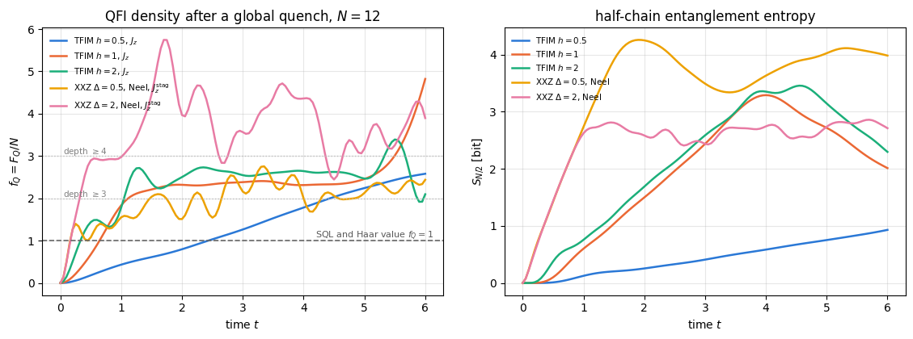
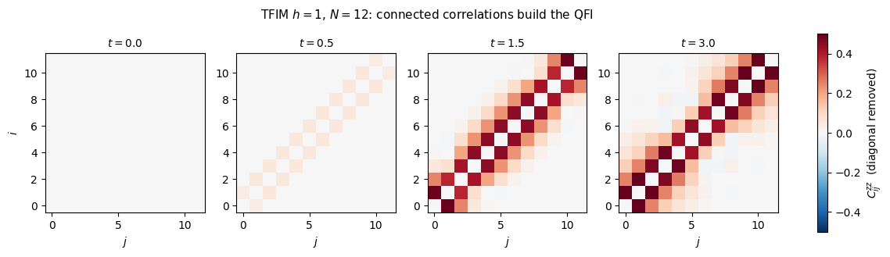
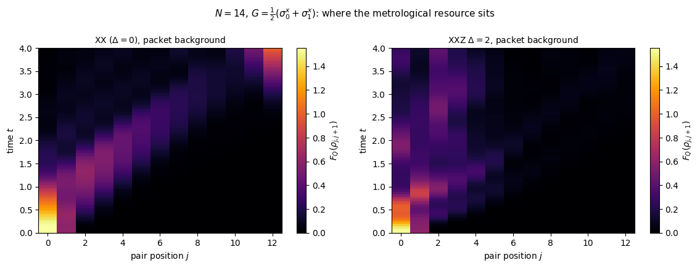
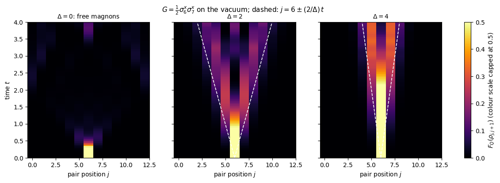
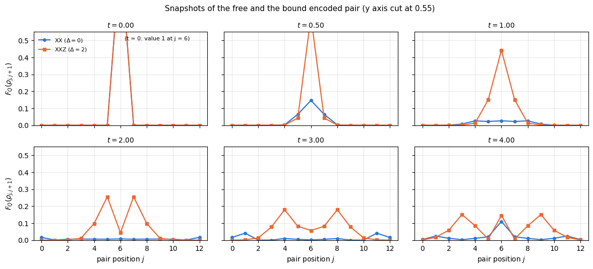

A quantum sensor is useful because its state carries correlations. Chapter 10 has so far treated those correlations as something one prepares on purpose: twist a coherent spin state, build a GHZ state, encode a phase. But a many-body system generates correlations by itself, simply by evolving. Prepare a product state, switch on a Hamiltonian, and entanglement grows; some of that entanglement is metrologically useful, and it grows and spreads according to laws of its own.
This notebook follows metrological usefulness — the quantum Fisher information \(F_Q\) — through space and time after a quench. Two complementary experiments.
A global quench. A whole chain is prepared in a product state and evolved. How fast does \(F_Q\) per particle grow, what does it saturate at, and how much multipartite entanglement does it certify along the way? Here \(F_Q\) is a global quantity and, as we will derive, it is nothing but the sum of all connected correlations of the generator’s local parts. Its growth therefore is the spreading of correlations, integrated over the chain.
A local encoding. The phase \(\theta\) is imprinted on one or two sites only, and the chain then transports the information. The question becomes spatial: if we can only read a block of \(l\) contiguous spins, when does the signal arrive, and how much of it is there? The answer is a light cone, and in the simplest case we can derive the exact profile in closed form and check the simulator against it.
The tools are the ones of Chapter 5 — Trotter–Suzuki time evolution with jax.jit and lax.scan — combined with the reduced-state quantum Fisher information of notebooks 29 and 30. One idea makes the combination cheap: instead of recomputing \(\rho_\theta(t)\) for several values of \(\theta\), we evolve the state and one tangent vector side by side and read every subsystem’s \(F_Q\) off the pair.
Road map.
Section 3 — the identity \(F_Q[\psi,J_a]=\sum_{ij}C^{aa}_{ij}\) derived, the entanglement-depth witness quoted, and the tangent-vector formulation of a \(\theta\)-dependent time evolution.
Section 4 — the numerical toolbox and its validation: TEBD against exact diagonalisation, the block QFI against three independent routes.
Sections 5–6 — global quenches of the transverse-field Ising and XXZ chains: the QFI density versus time, uniform against staggered generators, the certified entanglement depth, the late-time value compared with the Haar-random reference \(Nd/(d+1)\) of notebook 35, and the correlation matrix \(C_{ij}\) that produces it, including its finite correlation length and the open-boundary correction.
Sections 7–9 — local encoding: the light cone of the block-resolved QFI, its exact one-magnon solution, the measured front velocity with its derived threshold dependence, the two-site “where is the resource” map, a magnon trapped at the end of the chain, and how an interaction turns two ballistic magnons into a slow bound pair.
Section 10 — an animation of the two-site QFI profile of a free and of a bound magnon pair.
What you will learn
Physics
that for a pure state and a generator \(J_a=\tfrac12\sum_i\sigma^a_i\) the quantum Fisher information is exactly the sum of the connected correlators \(\langle\sigma^a_i\sigma^a_j\rangle-\langle\sigma^a_i\rangle\langle\sigma^a_j\rangle\);
why a conserved generator gives \(F_Q=0\) for all time and why the staggered generator is the right one after a Néel quench;
how the QFI density certifies a growing entanglement depth, and why it stops growing (a finite correlation length of the stationary state);
the light-cone structure of metrological information, its velocity, and how an interaction can trap the resource (at a chain end, or in a slow bound magnon pair) instead of letting it fly.
Numerical methods
carrying a tangent vector through a time evolution instead of finite-differencing in \(\theta\);
one-magnon dynamics as an exact \(N\times N\) reference for a \(2^N\)-dimensional simulation, and a Bessel-function closed form obtained by the method of images;
measuring a front velocity: threshold dependence (derived), interpolated crossings, fit errors, and why a single number that agrees with theory to three digits should make you suspicious;
separating a bulk quantity from its open-boundary \(1/N\) correction.
Implementation practice
lax.scan over Trotter steps with a two-component carry, jax.jit with static qubit indices;
jax.vmap over Hamiltonian parameters;
space-time heat maps and an embedded GIF built without writing a single file to disk.
15 — quench dynamics in spin chains: quenches, Lieb–Robinson light cones, the quasiparticle picture, and the threshold dependence of a measured front velocity, which we revisit here for a different observable;
What comes next.44b — variational quantum metrology (Chapter 11) optimises probe states and measurements under noise with automatic differentiation.
Conventions. Qubit \(q\) = tensor axis \(q\) = chain site \(q\); \(\vert0\rangle\) is the \(+1\) eigenstate of \(Z\). Hamiltonians are written in the Pauli convention, \(H=\sum J_{aa}\sigma^a_i\sigma^a_{i+1}+\sum h_a\sigma^a_i\), while generators use collective spins \(J_a=\tfrac12\sum_i\sigma^a_i\), so that the standard quantum limit is \(F_Q=N\) and the Heisenberg limit \(F_Q=N^2\). Time is measured in units of the inverse coupling (\(J_{xx}=1\)).
Configuration
Every notebook of this course starts with the same cell. Choose where to run (DEVICE) and the floating-point precision (PRECISION): "double" = float64/complex128 (default, recommended for physics), "single" = float32/complex64 (half the memory, faster on consumer GPUs, but watch the round-off). All code below derives its dtypes from RDTYPE/CDTYPE and its check tolerances from TOL, so nothing else needs to change.
Code
# ==============================================================================# CONFIGURATION -- adapt to your hardware, then run the notebook top to bottom# ==============================================================================DEVICE ="auto"# "auto": use a GPU if JAX finds one, else CPU | "cpu" | "gpu"PRECISION ="double"# "double": float64/complex128 | "single": float32/complex64import osif DEVICE =="cpu": os.environ["JAX_PLATFORMS"] ="cpu"# must be set BEFORE jax is importedimport stringfrom functools import partialimport mathimport numpy as npimport jaximport jax.numpy as jnpfrom jax import lax# Precision is configurable: "double" = float64/complex128 (default; needed for long time evolutions and# tight validation), "single" = float32/complex64 (half the memory, faster on consumer GPUs).# In a notebook PRECISION is defined in the Configuration cell; for this module use the env var QE_PRECISION.PRECISION =globals().get("PRECISION", os.environ.get("QE_PRECISION", "double"))jax.config.update("jax_enable_x64", PRECISION =="double")RDTYPE = jnp.float64 if PRECISION =="double"else jnp.float32 # real dtypeCDTYPE = jnp.complex128 if PRECISION =="double"else jnp.complex64 # complex dtype of all states/operatorsTOL =1e-10if PRECISION =="double"else1e-4# tolerance for sanity checks (asserts)_LETTERS = string.ascii_letters # the 52 einsum index labels a-z, A-Zimport timeimport matplotlib.pyplot as pltif DEVICE =="gpu"and jax.default_backend() =="cpu":print("WARNING: DEVICE='gpu' requested but JAX found no GPU -- running on CPU.")print(f"JAX {jax.__version__} | backend: {jax.default_backend()} | devices: {jax.devices()}")print(f"precision: {PRECISION} -> real {RDTYPE.__name__}, complex {CDTYPE.__name__}, check tolerance TOL={TOL:g}")
JAX 0.11.0 | backend: cpu | devices: [CpuDevice(id=0)]
precision: double -> real float64, complex complex128, check tolerance TOL=1e-10
2. Engine recap and notebook helpers
From the engine: the state constructors, apply_gate, heisenberg_terms (which builds any XXZ/TFIM term list), tebd_gates and apply_gates for the time evolution, exact_evolve (dense diagonalisation, built on dense_hamiltonian) for validation on small systems, and qfi_pure / qfi_mixed for the quantum Fisher information.
Engine recap — the simulator primitives used in this notebook (click to expand)
# ==============================================================================# ENGINE RECAP: the functions of quantum_engine.py (SmoQ.jax) used in this notebook.# Each one is derived, with its mathematics and an independent check, in notebook 08b# (Chapter 3), 'Building the quantum simulator engine'.# States are rank-N tensors of shape (2,)*N; every operator acts through ONE einsum.# ==============================================================================# ----------------------------------------------------------------------------# 1. Elementary matrices: Paulis, Clifford generators, rotations# ----------------------------------------------------------------------------I2 = jnp.eye(2, dtype=CDTYPE)X = jnp.array([[0, 1], [1, 0]], dtype=CDTYPE)Y = jnp.array([[0, -1j], [1j, 0]], dtype=CDTYPE)Z = jnp.array([[1, 0], [0, -1]], dtype=CDTYPE)XX = jnp.kron(X, X)YY = jnp.kron(Y, Y)ZZ = jnp.kron(Z, Z)# ----------------------------------------------------------------------------# 2. THE core primitive: a k-qubit operator acting on a tensor through ONE einsum# ----------------------------------------------------------------------------def apply_gate(psi, U, qubits):"""Apply a k-qubit operator U to the axes `qubits` of the tensor `psi`. MATH ---- One qubit (k=1), target q: psi'[s_0,..,a,..,s_{N-1}] = sum_b U[a,b] psi[s_0,..,b,..,s_{N-1}] Two qubits (k=2), targets (q1,q2); the 4x4 matrix is reshaped to U[a1,a2,b1,b2]: psi'[.., a1, .., a2, ..] = sum_{b1,b2} U[a1,a2,b1,b2] psi[.., b1, .., b2, ..] This IS the action of (1 x .. x U x .. x 1) -- written without ever building it. EINSUM TRANSLATION (generated automatically below) ------------------ N=3, q=1 : "db,abc->adc" d = new (output) index of qubit 1 N=4, q=(1,3) : "efbd,abcd->aecf" e,f = new indices of qubits 1 and 3 Recipe: label the axes of psi with letters a,b,c,...; give every target qubit a NEW letter (the next unused ones); U carries (new letters)+(old letters of the targets); the output is psi's labels with the target letters replaced by the new ones. IMPLEMENTATION NOTES -------------------- * reshape of U: (2^k,2^k) -> (2,)*2k. Row index = (a1..ak), column = (b1..bk), and the FIRST qubit in `qubits` is the most significant bit of the small matrix, i.e. it corresponds to the LEFT factor of kron(A,B). * `qubits` may be any distinct axes in any order: non-neighbouring gates cost the same. * U need not be unitary: projectors, Kraus operators and Hamiltonian terms reuse this. * psi may be ANY tensor with those axes of size 2: a state (rank N), a density tensor (rank 2N: ket axes 0..N-1, bra axes N..2N-1), ... COST O(2^k * 2^N) operations, O(2^N) memory (dense matrix: O(4^N) both). JAX `qubits` must be static Python ints (they define the einsum string); psi and U are traced, so the function can sit inside jit / grad / vmap / scan. """ qubits =tuple(int(q) for q in qubits) k, n =len(qubits), psi.ndim U = jnp.asarray(U, dtype=psi.dtype).reshape((2,) * (2* k)) # matrix -> rank-2k tensor inp =list(_LETTERS[:n]) # labels of psi's axes new = _LETTERS[n:n + k] # fresh labels for the outputs out = inp.copy()for a, q inzip(new, qubits): out[q] = a # target axes get the new labels sub =f"{''.join(new)}{''.join(inp[q] for q in qubits)},{''.join(inp)}->{''.join(out)}"return jnp.einsum(sub, U, psi)# ----------------------------------------------------------------------------# 3. State preparation# ----------------------------------------------------------------------------_KETS = {"0": [1, 0], "1": [0, 1], "+": [1, 1], "-": [1, -1], "r": [1, 1j], "l": [1, -1j]}def product_state(spec):"""Product state from a string, one character per qubit: product_state('01+-') = |0>|1>|+>|->. ('r','l' = the +1/-1 eigenstates of Y.) MATH psi[s_0,...,s_{N-1}] = v0[s_0] v1[s_1] ... v_{N-1}[s_{N-1}] EINSUM an outer product = einsum with NO summed index: "a,b,c->abc". A product state needs only 2N numbers; entanglement is what makes all 2^N necessary. """ vecs = [jnp.array(_KETS[c], dtype=CDTYPE) / jnp.linalg.norm(jnp.array(_KETS[c], dtype=CDTYPE))for c in spec] n =len(vecs) sub =",".join(_LETTERS[i] for i inrange(n)) +"->"+ _LETTERS[:n]return jnp.einsum(sub, *vecs)def ghz_state(N):"""GHZ state (|0...0> + |1...1>)/sqrt(2): two non-zero entries of the rank-N tensor.""" psi = jnp.zeros((2,) * N, dtype=CDTYPE)return psi.at[(0,) * N].set(1/ jnp.sqrt(2.0)).at[(1,) * N].set(1/ jnp.sqrt(2.0))def haar_state(key, N):"""Haar-random pure state: a complex Gaussian vector, normalised. (The Gaussian measure is unitarily invariant, so the direction is uniformly distributed.) `key` is an explicit JAX PRNG key -- same key, same state: reproducible science.""" k1, k2 = jax.random.split(key) v = jax.random.normal(k1, (2,) * N) +1j* jax.random.normal(k2, (2,) * N)return (v / jnp.linalg.norm(v)).astype(CDTYPE)# ----------------------------------------------------------------------------# 4. Reduced density matrices & observables (matrix-free)# ----------------------------------------------------------------------------def rdm(psi, keep):"""Reduced density matrix of the qubits `keep` from a PURE state: rho_A = Tr_B |psi><psi|. MATH rho_A[a, a'] = sum_{b} psi[a, b] psi^*[a', b] (a: indices of A, b: of the rest B) EINSUM TRANSLATION N=3, keep=(0,): "abc,Abc->aA" with operands psi, psi^* * letters of B (b,c) appear in BOTH operands and not in the output -> summed = traced out * the kept axis gets a different letter in the second operand -> stays open (a and A) The full |psi><psi| (4^N numbers) is never formed; cost O(2^N 2^|A|). Returns a (2^|A|, 2^|A|) matrix with row/column order following `keep`. """ keep =tuple(int(q) for q in keep) n, k = psi.ndim, len(keep) a =list(_LETTERS[:n]) b = a.copy()for new, q inzip(_LETTERS[n:n + k], keep): b[q] = new sub =f"{''.join(a)},{''.join(b)}->{''.join(a[q] for q in keep)}{''.join(b[q] for q in keep)}"return jnp.einsum(sub, psi, jnp.conj(psi)).reshape(2** k, 2** k)# ----------------------------------------------------------------------------# 5. State characteristics: entropies, fidelity, negativity# ----------------------------------------------------------------------------def schmidt_values(psi, subsystem):"""Schmidt coefficients of the bipartition A|B with A = `subsystem`. MATH Group the tensor axes into a matrix M[(a),(b)] = psi[a,b] of shape (2^|A|, 2^|B|). Its SVD M = U diag(lambda) V^dag IS the Schmidt decomposition |psi> = sum_k lambda_k |u_k>_A |v_k>_B , rho_A has eigenvalues lambda_k^2. IMPLEMENTATION transpose (A axes first) -> reshape -> svd. No density matrix needed. """ A =tuple(int(q) for q in subsystem) B =tuple(q for q inrange(psi.ndim) if q notin A) M = jnp.transpose(psi, A + B).reshape(2**len(A), -1)return jnp.linalg.svd(M, compute_uv=False)def entanglement_entropy(psi, subsystem, base=2.0):"""Entanglement entropy S_A = -sum_k p_k log p_k with p_k = lambda_k^2 (squared Schmidt values). Product state: 0. Bell/GHZ across any cut: 1 bit. Random state: ~ |A| - 1/(2 ln2) 2^{|A|-|B|} (Page).""" p = jnp.clip(schmidt_values(psi, subsystem) **2, 1e-16, None)return-jnp.sum(p * jnp.log(p)) / jnp.log(base)# ----------------------------------------------------------------------------# 8. Hamiltonians as lists of local terms; H|psi> matrix-free# ----------------------------------------------------------------------------def heisenberg_terms(N, Jxx=1.0, Jyy=1.0, Jzz=1.0, hx=0.0, hy=0.0, hz=0.0, periodic=False, bonds=None):"""Spin-1/2 Hamiltonian in Pauli convention H = sum_<ij> (Jxx X_i X_j + Jyy Y_i Y_j + Jzz Z_i Z_j) + sum_i (hx X_i + hy Y_i + hz Z_i) returned as a LIST of local terms [(qubits, small_matrix), ...] -- this list *is* our Hamiltonian. Heisenberg: Jxx=Jyy=Jzz XXZ: Jxx=Jyy!=Jzz XY: Jzz=0 TFIM: only Jzz and hx. `bonds` overrides the default open chain (any graph: ladders, 2D lattices, all-to-all, ...)."""if bonds isNone: bonds = [(i, i +1) for i inrange(N -1)] + ([(N -1, 0)] if periodic and N >2else []) terms = [((i, j), Jxx * XX + Jyy * YY + Jzz * ZZ) for (i, j) in bonds]if hx !=0or hy !=0or hz !=0: terms += [((i,), hx * X + hy * Y + hz * Z) for i inrange(N)]return termsdef apply_hamiltonian(terms, psi):"""H|psi> = sum_k h_k|psi>, every term applied with `apply_gate` (h_k is Hermitian, not unitary -- the einsum does not care). Cost O(#terms * 2^N). This matrix-vector product is ALL that Lanczos, Chebyshev and Krylov methods need, which is why they scale to N ~ 25-30.""" out = jnp.zeros_like(psi)for qubits, h in terms: out = out + apply_gate(psi, h, qubits)return outdef dense_hamiltonian(terms, N):"""Dense 2^N x 2^N matrix for VALIDATION on small N -- built from the matrix-free action: column j of H is H|e_j>. `jax.vmap` applies H to all basis vectors at once.""" eye = jnp.eye(2** N, dtype=CDTYPE).reshape((2** N,) + (2,) * N) cols = jax.vmap(lambda e: apply_hamiltonian(terms, e).reshape(-1))(eye)return cols.T# ----------------------------------------------------------------------------# 9. Time evolution: TEBD / Trotter-Suzuki, Chebyshev, Krylov, exact# ----------------------------------------------------------------------------def _expm_herm(h, tau):"""exp(-i tau h) for a SMALL Hermitian matrix: h = V w V^dag => V exp(-i tau w) V^dag.""" w, v = jnp.linalg.eigh(jnp.asarray(h, dtype=CDTYPE))return (v * jnp.exp(-1j* tau * w)) @ v.conj().Tdef tebd_gates(terms, dt, order=2):"""Gate sequence of ONE Trotter-Suzuki (TEBD) step for H = sum_k h_k. MATH exp(-i H dt) cannot be split exactly because [h_k, h_l] != 0, but (BCH formula): order 1: prod_k e^{-i h_k dt} local error O(dt^2), global O(dt) order 2: prod_k e^{-i h_k dt/2} * prod_k(reversed) e^{-i h_k dt/2} local O(dt^3), global O(dt^2) order 4: S2(s dt)^2 S2((1-4s) dt) S2(s dt)^2, s = 1/(4 - 4^{1/3}) (Suzuki) global O(dt^4) Each factor is a 2x2 or 4x4 unitary -> applied by einsum; this is TEBD on a full state vector. Every order is exactly unitary: the norm is conserved to machine precision; the ERROR is in the phase /direction of the state, and it is controlled by dt. """if order ==1:return [(q, _expm_herm(h, dt)) for q, h in terms]if order ==2: half = [(q, _expm_herm(h, dt /2)) for q, h in terms]return half + half[::-1]if order ==4: s =1.0/ (4.0-4.0** (1.0/3.0)) seq = []for w in (s, s, 1-4* s, s, s): seq += tebd_gates(terms, w * dt, order=2)return seqraiseValueError("order must be 1, 2 or 4")def apply_gates(psi, gates):"""Apply a list [(qubits, U), ...] in order -- a quantum circuit is a Python loop over einsums. Under `jax.jit` the loop is unrolled at trace time and XLA fuses it into one program."""for qubits, U in gates: psi = apply_gate(psi, U, qubits)return psidef exact_evolve(psi, terms, t):"""Dense reference for small N: full diagonalisation H = V w V^dag, |psi(t)> = V e^{-i w t} V^dag |psi>. O(8^N) time, O(4^N) memory -- the wall that matrix-free methods avoid; used only to validate them.""" N = psi.ndim w, v = jnp.linalg.eigh(dense_hamiltonian(terms, N))return ((v * jnp.exp(-1j* t * w)) @ (v.conj().T @ psi.reshape(-1))).reshape((2,) * N)# ----------------------------------------------------------------------------# 11. Collective spins, spin squeezing, quantum Fisher information# ----------------------------------------------------------------------------def apply_collective(psi, P, qubits=None):"""(sum_q P_q)|psi> for a single-qubit operator P -- N einsums, O(N 2^N). Note: NO factor 1/2 here; the collective spin is J_a = (1/2) sum_q sigma^a_q.""" qubits =range(psi.ndim) if qubits isNoneelse qubits out = jnp.zeros_like(psi)for q in qubits: out = out + apply_gate(psi, P, [q])return outdef qfi_pure(psi, P=Z, qubits=None):"""Quantum Fisher information of a pure state for the phase imprinted by exp(-i theta J), J = (1/2) sum_q P_q: F_Q = 4 Var(J) = <G^2> - <G>^2 with G = sum_q P_q = 2J. Cramer-Rao: Delta theta >= 1/sqrt(M F_Q). Product states F_Q <= N (standard quantum limit); GHZ: F_Q = N^2 (Heisenberg limit). Matrix-free: |phi> = G|psi>, <G^2> = <phi|phi>, <G> = <psi|phi>.""" phi = apply_collective(psi, P, qubits)return jnp.real(jnp.vdot(phi, phi)) - jnp.real(jnp.vdot(psi, phi)) **2def qfi_mixed(rho_mat, G_mat, tol=1e-12):"""QFI of a MIXED state (symmetric-logarithmic-derivative formula), rho = sum_m l_m |m><m|: F_Q = 2 sum_{m,n : l_m+l_n>0} (l_m - l_n)^2/(l_m + l_n) |<m|G|n>|^2 (G = generator, e.g. J). Reduces to 4 Var(G) for pure states. Dense eigendecomposition -> use on small / reduced states.""" lam, v = jnp.linalg.eigh(rho_mat) G = v.conj().T @ G_mat @ v num = (lam[:, None] - lam[None, :]) **2 den = lam[:, None] + lam[None, :]return2* jnp.sum(jnp.where(den > tol, num / jnp.where(den > tol, den, 1.0), 0.0) * jnp.abs(G) **2)def collective_dense(P, n):"""Dense J = (1/2) sum_q P_q on n qubits (input of `qfi_mixed`), built from the matrix-free action on the basis vectors (vmap), exactly like `dense_hamiltonian`.""" eye = jnp.eye(2** n, dtype=CDTYPE).reshape((2** n,) + (2,) * n)return0.5* jax.vmap(lambda e: apply_collective(e, P).reshape(-1))(eye).T
Code
# ==============================================================================# PLOT STYLE + small helpers used throughout this notebook# ==============================================================================import base64import tempfilefrom matplotlib.animation import FuncAnimation, PillowWriterfrom IPython.display import displayPALETTE = ["#2a78d6", "#eb6834", "#1baf7a", "#eda100", "#e87ba4", "#4a3aa7", "#8c8c8c", "#00868b"]MARKERS = ["o", "s", "^", "D", "v", "P", "X", "*"]plt.rcParams.update({"axes.prop_cycle": plt.cycler(color=PALETTE), "axes.grid": True,"grid.alpha": 0.3, "font.size": 10, "legend.frameon": False})def max_abs(a):"""Largest absolute entry of an array, as a Python float."""returnfloat(jnp.max(jnp.abs(jnp.asarray(a))))def timed(f, *args, budget=0.3, min_reps=3, max_reps=200):"""Return (result, compile_time, best_run_time). JAX is asynchronous, so every timed value is forced with `block_until_ready`; we report the MINIMUM over repetitions, which measures the code rather than the operating system of a shared machine.""" t0 = time.time() out = jax.block_until_ready(f(*args)) t_compile = time.time() - t0 best, n, t_start = np.inf, 0, time.time()while n < min_reps or (time.time() - t_start < budget and n < max_reps): t0 = time.time() out = jax.block_until_ready(f(*args)) best =min(best, time.time() - t0) n +=1return out, t_compile, best
3. Theory
3.1 The quantum Fisher information is the sum of the connected correlations
Take a pure state \(\vert\psi\rangle\) and the collective generator \(G=J_a=\tfrac12\sum_i\sigma^a_i\). Notebook 29 established \(F_Q=4\,\mathrm{Var}(G)\). Expand the variance:
The two factors of \(\tfrac12\) in \(J_a\) produce a \(\tfrac14\) that cancels the \(4\) exactly. Separating the diagonal, where \((\sigma^a_i)^2=\mathbb 1\):
The first sum is at most \(N\) and is the whole story for a product state (the standard quantum limit of notebook 29, rederived in one line). Everything above the standard quantum limit comes from the connected correlations between different sites. After a quench from a product state those correlations build up inside a light cone, so the growth of \(F_Q\) measures the correlations accumulated so far, summed over the chain. Sections 5 and 6 follow this growth and show where it stops.
The same algebra for a staggered generator \(G=\tfrac12\sum_i(-1)^i\sigma^a_i\) gives
which picks out antiferromagnetic correlations. After a Néel quench that is exactly the right question to ask, and Section 5 shows why the uniform generator is useless there.
3.2 The QFI density as a witness of entanglement depth
Notebook 29 quoted the criterion we shall read the curves with. Call a state \(k\)-producible if it is a mixture of products of blocks of at most \(k\) qubits. Writing \(N=sk+r\) with \(s=\lfloor N/k\rfloor\) and \(0\le r<k\), every \(k\)-producible state obeys (Hyllus et al. 2012; Tóth 2012)
Here \(J_{\mathbf n}=\tfrac12\sum_i\mathbf n\cdot\vec\sigma_i\) with the same normalisation as Eq. (1): a product state (\(k=1\), \(s=N\), \(r=0\)) gives the bound \(N\), the standard quantum limit, and \(k=N\) gives \(N^2\). The second inequality follows from \(r^2\le rk\). So \(F_Q/N>k\) certifies that some block of at least \(k+1\) qubits is genuinely entangled: for a non-integer QFI density\(f_Q=F_Q/N\), the entanglement depth is at least \(\lfloor f_Q\rfloor+1\). We use the sharp form \(sk^2+r^2\), which can certify one more qubit than the corollary \(kN\) (Section 5.1 meets such a case).
The bound also holds for the staggered generator of Eq. (3). With \(U=\prod_{i\ \mathrm{odd}}\sigma^x_i\) one has \(U\sigma^z_iU^\dagger=(-1)^i\sigma^z_i\), so \(J_z^{\rm stag}=UJ_zU^\dagger\) and \(F_Q\left[\rho,J_z^{\rm stag}\right]=F_Q\left[U^\dagger\rho U,J_z\right]\). A product of single-site unitaries maps \(k\)-producible states to \(k\)-producible states, so Eq. (4) applies unchanged.
3.3 A \(\theta\)-dependent evolution needs one extra vector, not three
The pipeline of this notebook is: prepare \(\vert\psi_0\rangle\), imprint \(\theta\) with a generator \(G\), evolve with \(H\) for a time \(t\), then look at a subsystem:
Numerically: define the tangent vector\(\vert\phi(t)\rangle=U(t)G\vert\psi_0\rangle\). It obeys the same Schrödinger equation as \(\vert\psi(t)\rangle\), so one time evolution with a two-component state carries both. No finite differences in \(\theta\), no three copies of the state, and the quantum Fisher information of any block follows from the pair \((\psi,\phi)\) by the formula of notebook 29,
where \(\Psi\) and \(\Phi\) are \(\psi\) and \(\phi\) reshaped into \(2^{\vert A\vert}\times2^{N-\vert A\vert}\) matrices. * Physically: the effective generator at time \(t\) is the Heisenberg-evolved operator \(G(t)=U(t)GU^\dagger(t)\). If \(G\) acts on one site, \(G(t)\) acts on a growing region — this is operator spreading, the same object that Lieb–Robinson bounds constrain and that out-of-time-order correlators measure. The light cone of Section 7 is the light cone of \(G(t)\), seen through the quantum Fisher information.
One special case is worth stating now because it will be our sharpest test. If \(\left[G,H\right]=0\) then \(G(t)=G\) for all \(t\); if in addition \(\vert\psi_0\rangle\) is an eigenstate of \(G\), then \(F_Q=0\) forever. This is why the uniform \(J_z\) generator is dead in the XXZ chain, where \(J_z\) is conserved.
Code
# ==============================================================================# STEP 1: the quantum Fisher information of a block, from a state and a tangent vector# (derived in notebook 29, Sec. 15; notebook 37 generalises it as used here)# ==============================================================================def qfi_from_derivative(rho, drho, tol=1e-12):"""SLD quantum Fisher information from a density matrix and its derivative. MATH F_Q = 2 sum_{m,n} |<m|drho|n>|^2 / (lam_m + lam_n) over lam_m + lam_n > tol, rho = sum_m lam_m |m><m|. (Derived in notebook 30, Sec. 5.) COST one Hermitian eigendecomposition, O(dim^3). """ lam, v = jnp.linalg.eigh(rho) D = v.conj().T @ drho @ v den = lam[:, None] + lam[None, :] ok = den > tolreturn2* jnp.sum(jnp.where(ok, jnp.abs(D) **2/ jnp.where(ok, den, 1.0), 0.0))def block_qfi(psi, phi, keep, compress=True, tol=1e-12):"""QFI of the reduced state of the sites `keep`, from the state and its tangent vector -- Eq. (7). MATH Psi = psi with the kept axes moved to the front and reshaped to (2^K, 2^{N-K}); Phi likewise for |phi> = G(t)|psi>. rho_A = Psi Psi^dag, d rho_A / d theta = -i (T - T^dag), T = Phi Psi^dag. IMPL `keep` may be any set of sites. When 2^K > 2^{N-K} a thin QR of [Psi | Phi] projects onto the active subspace (dimension <= 2^{N-K+1}): the non-zero spectrum and all matrix elements survive. COST O(8^min(K, N-K)) time, O(2^N) memory. JAX `keep` is a tuple of static Python ints; psi and phi are traced arrays. """ keep =tuple(int(q) for q in keep) rest =tuple(q for q inrange(psi.ndim) if q notin keep) dA =2**len(keep) Psi = jnp.transpose(psi, keep + rest).reshape(dA, -1) Phi = jnp.transpose(phi, keep + rest).reshape(dA, -1)if compress and Psi.shape[0] > Psi.shape[1]: Q, _ = jnp.linalg.qr(jnp.concatenate([Psi, Phi], axis=1)) Psi, Phi = Q.conj().T @ Psi, Q.conj().T @ Phi T_ = Phi @ Psi.conj().Treturn qfi_from_derivative(Psi @ Psi.conj().T, -1j* (T_ - T_.conj().T), tol)def corr_matrix(psi, P):"""Connected correlation matrix C_ij = <P_i P_j> - <P_i><P_j> for a single-qubit Pauli P. MATH with |chi_i> = P_i|psi>, <P_i P_j> = Re <chi_i|chi_j> (the real part, because P_i P_j and P_j P_i are adjoints of each other and the two sites commute for i != j). COST N applications of P (O(N 2^N)) plus N^2 inner products (O(N^2 2^N)). """ N = psi.ndim chis = [apply_gate(psi, P, [q]) for q inrange(N)] m = jnp.stack([jnp.real(jnp.vdot(psi, c)) for c in chis]) C = jnp.stack([jnp.stack([jnp.real(jnp.vdot(chis[i], chis[j])) for j inrange(N)]) for i inrange(N)])return C - jnp.outer(m, m)def qfi_staggered(psi, P):"""F_Q for the staggered generator G = (1/2) sum_i (-1)^i P_i -- Eq. (3), matrix-free.""" N = psi.ndim out = jnp.zeros_like(psi)for q inrange(N): out = out + (-1.0) ** q * apply_gate(psi, P, [q])return jnp.real(jnp.vdot(out, out)) - jnp.real(jnp.vdot(psi, out)) **2def entanglement_depth(F_value, N):"""Largest k+1 such that F_Q > s k^2 + r^2 with s = N//k, r = N%k -- the depth certified by Eq. (4). Returns 1 when nothing is certified.""" depth =1for k inrange(1, N +1): s, r =divmod(N, k)if F_value > s * k **2+ r **2+1e-9: depth = k +1return depth# --- CHECKPOINT: Eq. (1) -- the sum of connected correlators IS the QFI ------------------print("Eq. (1): sum_ij C^aa_ij versus 4 Var(J_a)\n")print(f"{'state':>10s}{'P':>3s} | {'sum_ij C_ij':>14s}{'qfi_pure':>14s}{'err':>10s}")err_id =0.0for name, psi in (("GHZ(6)", ghz_state(6)), ("|+>^6", product_state("+"*6)), ("Neel(6)", product_state("01"*3)), ("Haar(6)", haar_state(jax.random.PRNGKey(0), 6))):for pn, P in (("Z", Z), ("X", X), ("Y", Y)): a =float(jnp.sum(corr_matrix(psi, P))) b =float(qfi_pure(psi, P)) err_id =max(err_id, abs(a - b))print(f"{name:>10s}{pn:>3s} | {a:14.8f}{b:14.8f}{abs(a - b):10.1e}")print(f"\nworst deviation: {err_id:.2e}")assert err_id <1e4* TOL
Eq. (1): sum_ij C^aa_ij versus 4 Var(J_a)
state P | sum_ij C_ij qfi_pure err
GHZ(6) Z | 36.00000000 36.00000000 0.0e+00
GHZ(6) X | 6.00000000 6.00000000 0.0e+00
GHZ(6) Y | 6.00000000 6.00000000 0.0e+00
|+>^6 Z | 6.00000000 6.00000000 2.7e-15
|+>^6 X | 0.00000000 0.00000000 6.2e-15
|+>^6 Y | 6.00000000 6.00000000 2.7e-15
Neel(6) Z | 0.00000000 0.00000000 0.0e+00
Neel(6) X | 6.00000000 6.00000000 0.0e+00
Neel(6) Y | 6.00000000 6.00000000 0.0e+00
Haar(6) Z | 5.74174697 5.74174697 8.9e-16
Haar(6) X | 7.25101401 7.25101401 8.9e-16
Haar(6) Y | 6.87978880 6.87978880 8.9e-16
worst deviation: 6.22e-15
Equation (1) holds to machine precision for every state and every Pauli direction. In words: the quantum Fisher information of a collective generator is an ordinary two-point correlation function, summed over all pairs. No optimisation, no symmetric logarithmic derivative, nothing exotic — for a pure state and a collective generator, \(F_Q\) is exactly as accessible as a structure factor.
4. The toolbox and its validation
The Hamiltonians are the standard one-dimensional family, built by the engine’s heisenberg_terms as a list of local terms:
At \(\Delta=0\) the XXZ chain is the XX chain, which the Jordan–Wigner transformation (notebook 15, Section 7.2) maps to free fermions; it is our exactly solvable reference. The transverse-field Ising chain is free as well, and critical at \(h=1\).
The evolution is second- or fourth-order Trotter–Suzuki (notebook 12): one step is a fixed list of two-site gates, applied by apply_gates. The loop over steps is a lax.scan, so it compiles once instead of unrolling; the carry is the pair\((\psi,\phi)\) of Eq. (6), which is what makes the whole notebook cheap.
Code
# ==============================================================================# STEP 2: Hamiltonians, and the paired (state, tangent vector) time evolution# ==============================================================================def xxz_terms(N, delta=0.0, hx=0.0):"""H = sum_i (X X + Y Y + delta Z Z)_{i,i+1} + hx sum_i X_i, as a list of local terms (open chain)."""return heisenberg_terms(N, Jxx=1.0, Jyy=1.0, Jzz=delta, hx=hx)def tfim_terms(N, h=1.0, hz=0.0):"""H = sum_i Z_i Z_{i+1} + h sum_i X_i + hz sum_i Z_i. hz != 0 breaks integrability."""return heisenberg_terms(N, Jxx=0.0, Jyy=0.0, Jzz=1.0, hx=h, hz=hz)def make_pair_stepper(terms, dt, order=2, n_sub=1):"""Compile ONE observation interval: `n_sub` Trotter steps applied to the pair (psi, phi). JAX `lax.scan` compiles the inner loop once; the carry is a tuple of two rank-N tensors, which JAX treats as a pytree -- the state and its tangent vector travel together, exactly as Eq. (6) asks. """ gates = tebd_gates(terms, dt, order)@jax.jitdef advance(pair):def one(carry, _): p, f = carryreturn (apply_gates(p, gates), apply_gates(f, gates)), None (p, f), _ = lax.scan(one, pair, None, length=n_sub)return p, freturn advancedef evolve_pair(psi0, phi0, terms, dt, n_obs, n_sub, order=2, observe=None):"""Evolve the pair and record `observe(psi, phi)` after every block of `n_sub` Trotter steps. Returns (times, list of observations) with the t = 0 entry included.""" advance = make_pair_stepper(terms, dt, order, n_sub) pair, rec = (psi0, phi0), [observe(psi0, phi0)] if observe isnotNoneelse []for _ inrange(n_obs): pair = advance(pair)if observe isnotNone: rec.append(observe(*pair))return dt * n_sub * np.arange(n_obs +1), rec# --- CHECKPOINT 1: Trotter against exact diagonalisation, for the state AND the tangent vector ----N_V =8terms_v = xxz_terms(N_V, delta=0.7)psi0_v = product_state("01"* (N_V //2))phi0_v =0.5* apply_gate(psi0_v, X, [0])T_V =2.0print(f"N = {N_V}, XXZ with Delta = 0.7, evolution to t = {T_V}\n")print(f"{'order':>6s}{'dt':>8s}{'steps':>7s} | {'err(psi)':>11s}{'err(phi)':>11s}{'err F_Q(J_x)':>13s}")psi_ex = exact_evolve(psi0_v, terms_v, T_V)phi_ex = exact_evolve(phi0_v, terms_v, T_V)f_ex =float(qfi_pure(psi_ex, X))for order, dt in ((2, 0.05), (2, 0.02), (2, 0.01), (4, 0.05), (4, 0.02)): n =int(round(T_V / dt)) adv = make_pair_stepper(terms_v, dt, order, n) p, f = adv((psi0_v, phi0_v))print(f"{order:6d}{dt:8.3f}{n:7d} | {max_abs(p - psi_ex):11.2e}{max_abs(f - phi_ex):11.2e} "f"{abs(float(qfi_pure(p, X)) - f_ex):13.2e}")# --- CHECKPOINT 2: block_qfi against 4 Var(G) and against qfi_mixed on the reduced state ---------print(f"\nblock_qfi: no loss must give 4 Var(G); a block must match qfi_mixed(rho_A, G_A)\n")print(f"{'block':>12s} | {'block_qfi':>13s}{'reference':>13s}{'err':>10s}")psi_b = exact_evolve(psi0_v, terms_v, 1.3)phi_b =0.5* apply_collective(psi_b, X) # collective generator: Eq. (3) of notebook 37 applieserr_b =abs(float(block_qfi(psi_b, phi_b, range(N_V))) -float(qfi_pure(psi_b, X)))print(f"{'all sites':>12s} | {float(block_qfi(psi_b, phi_b, range(N_V))):13.8f} "f"{float(qfi_pure(psi_b, X)):13.8f}{err_b:10.1e}")for blk in ((0, 1, 2), (2, 3, 4, 5), (3, 4, 5, 6, 7)): a =float(block_qfi(psi_b, phi_b, blk)) b =float(qfi_mixed(rdm(psi_b, blk), collective_dense(X, len(blk)))) err_b =max(err_b, abs(a - b))print(f"{str(blk):>12s} | {a:13.8f}{b:13.8f}{abs(a - b):10.1e}")print(f"\nworst deviation: {err_b:.2e}")assert err_b <1e4* TOL
N = 8, XXZ with Delta = 0.7, evolution to t = 2.0
order dt steps | err(psi) err(phi) err F_Q(J_x)
4 0.050 40 | 7.48e-07 4.34e-07 5.71e-08
4 0.020 100 | 1.91e-08 1.11e-08 1.56e-09
block_qfi: no loss must give 4 Var(G); a block must match qfi_mixed(rho_A, G_A)
block | block_qfi reference err
The first table is the ordinary Trotter convergence of notebook 12, with one addition: the tangent vector converges at the same rate as the state, as it must, since it obeys the same equation. Second order improves by a factor of about four when \(dt\) is halved (\(1.24\times10^{-3}\to3.11\times10^{-4}\)); fourth order improves by \(39\) when \(dt\) shrinks by a factor \(2.5\), as \(2.5^4=39\) predicts. We use order \(4\) with \(dt\) small enough that the Trotter error is far below every physical effect we discuss.
The second table validates block_qfi on an evolved, genuinely entangled state: the full system reproduces \(4\,\mathrm{Var}(J_x)\), and every contiguous block reproduces the completely independent route “build the reduced density matrix, build the restricted generator, call the engine’s mixed-state formula”. That second route only works because the generator is a sum of single-site terms — the commutator lemma of notebook 37. The tangent-vector route of Eq. (7) does not need that assumption, which is why Sections 7–9 can use a local generator whose Heisenberg evolution is an arbitrary many-body operator.
5. A global quench: the growth rate of useful entanglement
The first experiment is the standard one. Prepare a product state, switch on a Hamiltonian, and watch
— the QFI density — grow. By Eq. (2), \(f_Q=1\) is the standard quantum limit; by Eq. (4), \(f_Q>k\) certifies an entanglement depth of at least \(k+1\).
Two quench families, chosen so that the generator question is unavoidable.
Transverse-field Ising, \(H=\sum\sigma^z_i\sigma^z_{i+1}+h\sum\sigma^x_i\), quenched from \(\vert0\rangle^{\otimes N}\) (all spins up). We scan \(h=0.5\) (ordered side), \(h=1\) (critical) and \(h=2\) (disordered side), with the uniform generator \(J_z\). With the coupling sign of Eq. (8) the all-up state is the highest level at \(h=0\), not the ground state. For this quench the sign does not matter: \(H\) and \(\vert0\rangle^{\otimes N}\) are real, so evolving with \(-H\) gives the complex-conjugate state and the same \(\langle\sigma^z_i\sigma^z_j\rangle\); and \(\prod_i\sigma^z_i\) maps \(-H\) to the ferromagnet \(-\sum\sigma^z_i\sigma^z_{i+1}+h\sum\sigma^x_i\) while leaving \(\vert0\rangle^{\otimes N}\) and every \(\sigma^z_i\) unchanged. The quench is therefore equivalent to the standard one from the ferromagnetic ground state at \(h=0\).
XXZ, quenched from the Néel state \(\vert0101\ldots\rangle\). Here \(J_z\) commutes with \(H\) and the Néel state is a \(J_z\) eigenstate, so Section 3.3 predicts \(F_Q\left[J_z\right]=0\) at all times. The staggered\(J_z\) generator of Eq. (3) is the one that sees the physics.
For reference, notebook 35 established that a Haar-random state — the fully scrambled end point — has \(\mathbb E\left[F_Q\right]=Nd/(d+1)\) with \(d=2^N\), i.e. \(f_Q\to1\): a fully scrambled state carries no useful entanglement at all. A quench that drove the chain towards a random state would bring \(f_Q\) back down to \(1\); the curves below show whether that happens in the time window we can simulate.
Code
# ==============================================================================# STEP 3: QFI density after global quenches# ==============================================================================# PARAMETERS ------------------------------------------------------------------N_G =12# 2^12 amplitudesDT_G, NSUB_G, NOBS_G =0.05, 1, 120# Trotter step, steps per observation, observations -> t_max = 6ORDER_G =4# -----------------------------------------------------------------------------QUENCHES = [ ("TFIM $h=0.5$", tfim_terms(N_G, 0.5), product_state("0"* N_G), "uniform"), ("TFIM $h=1$", tfim_terms(N_G, 1.0), product_state("0"* N_G), "uniform"), ("TFIM $h=2$", tfim_terms(N_G, 2.0), product_state("0"* N_G), "uniform"), ("XXZ $\\Delta=0.5$, Neel", xxz_terms(N_G, 0.5), product_state("01"* (N_G //2)), "both"), ("XXZ $\\Delta=2$, Neel", xxz_terms(N_G, 2.0), product_state("01"* (N_G //2)), "both"),]def plain(label):"""Label without LaTeX markup, for printed tables (the figures keep the LaTeX)."""return label.replace("$", "").replace("\\", "")def quench_observables(psi, _phi):"""(F_Q[J_x], F_Q[J_y], F_Q[J_z], F_Q[staggered J_z], S_half) of a pure state."""return jnp.stack([qfi_pure(psi, X), qfi_pure(psi, Y), qfi_pure(psi, Z), qfi_staggered(psi, Z), entanglement_entropy(psi, range(psi.ndim //2))])results_g = {}t0 = time.time()for label, terms, psi0, _kind in QUENCHES: ts, rec = evolve_pair(psi0, psi0, terms, DT_G, NOBS_G, NSUB_G, ORDER_G, observe=quench_observables) results_g[label] = (ts, np.array(rec))print(f"five quenches at N = {N_G} up to t = {ts[-1]:.1f} ({time.time() - t0:.1f} s)\n")HAAR_REF =2** N_G / (2** N_G +1)T_WIN =4.0# beyond t ~ 4 reflections from the chain ends dominate at N = 12 (see below)print(f"QFI density f_Q = F_Q/N (SQL: 1; Heisenberg: N = {N_G}; Haar: {HAAR_REF:.4f})")print(f"maximum and certified depth (Eq. 4) both inside t <= {T_WIN:.0f} and over the whole run t <= {ts[-1]:.0f}\n")print(f"{'quench':>24s}{'generator':>10s} | "+" ".join(f"t={t:<5.2f}"for t in (0.25, 0.5, 1, 2, 4, 6))+f" | {'max(t<=4)':>9s}{'depth':>5s} | {'max(all)':>8s}{'depth':>5s}")for label, (ts, rec) in results_g.items():for gname, col in (("J_z", 2), ("J_z stag.", 3)):if"TFIM"in label and gname !="J_z":continueif"XXZ"in label and gname =="J_z"andfloat(np.max(rec[:, 2])) <1e-9:print(f"{plain(label):>24s}{gname:>10s} | "+" ".join(f"{0.0:7.3f}"for _ inrange(6))+" (conserved: exactly zero)")continue vals = rec[:, col] / N_G idx = [int(round(t / (DT_G * NSUB_G))) for t in (0.25, 0.5, 1, 2, 4, 6)] win = ts <= T_WIN +1e-9 dep_w = entanglement_depth(float(np.max(rec[win, col])), N_G) dep = entanglement_depth(float(np.max(rec[:, col])), N_G)print(f"{plain(label):>24s}{gname:>10s} | "+" ".join(f"{vals[i]:7.3f}"for i in idx)+f" | {vals[win].max():9.3f}{dep_w:5d} | {vals.max():8.3f}{dep:5d}")
# ==============================================================================# FIGURE 1: QFI density and entanglement entropy after the quenches# ==============================================================================fig, axes = plt.subplots(1, 2, figsize=(11.4, 4.3))j =0for label, (ts, rec) in results_g.items(): col =2if"TFIM"in label else3 gl =r"$J_z$"if"TFIM"in label elser"$J_z^{\mathrm{stag}}$" axes[0].plot(ts, rec[:, col] / N_G, "-", color=PALETTE[j], lw=1.8, label=f"{label}, {gl}") axes[1].plot(ts, rec[:, 4], "-", color=PALETTE[j], lw=1.8, label=label) j +=1axes[0].axhline(1.0, color="0.4", ls="--", lw=1.2)axes[0].text(4.2, 1.06, "SQL and Haar value $f_Q=1$", fontsize=8, color="0.35")for k in (2, 3): axes[0].axhline(k, color="0.75", ls=":", lw=1.0) axes[0].text(0.05, k +0.04, f"depth $\\geq{k +1}$", fontsize=7.5, color="0.5")axes[0].set_xlabel("time $t$"); axes[0].set_ylabel(r"$f_Q=F_Q/N$")axes[0].set_title(f"QFI density after a global quench, $N={N_G}$"); axes[0].legend(fontsize=7.5, loc="upper left")axes[1].set_xlabel("time $t$"); axes[1].set_ylabel(r"$S_{N/2}$ [bit]")axes[1].set_title("half-chain entanglement entropy"); axes[1].legend(fontsize=7.5, loc="upper left")fig.tight_layout(); plt.show()

Five curves, five different stories, and every one of them is readable from Section 3.
The dead generator. The two XXZ rows with \(G=J_z\) print zeros — not small numbers, exact zeros. \(J_z\) commutes with \(H_{\rm XXZ}\) (the model conserves the total magnetisation) and the Néel state is a \(J_z\) eigenstate, so by Section 3.3 the state never moves under the encoding and no measurement can learn \(\theta\). This is the single most common way to waste a metrology experiment, and it costs nothing to check in advance: compute \(\left[G,H\right]\).
Speed depends on the quench. With the staggered generator the same XXZ quenches are very much alive. The deeper quench \(\Delta=2\) passes the standard quantum limit almost immediately (\(f_Q=1.58\) already at \(t=0.25\)), reaches \(f_Q\approx4\) by \(t=2\) and oscillates strongly, with its maximum \(5.75\) at \(t=1.7\); at \(\Delta=0.5\) the density, after its first rise, stays between \(1\) and \(2.8\) up to \(t=6\). In the Ising family the critical quench \(h=1\) leads at intermediate times (\(f_Q=1.84\) at \(t=1\) against \(1.79\) for \(h=2\) and \(0.43\) for \(h=0.5\)), while \(h=2\) leads at very short times. The short-time behaviour is a one-line calculation: for an initial state that is an eigenstate of \(G\), expanding \(U(t)\) to first order gives \(F_Q\simeq4t^2\,\mathrm{Var}_{\psi_0}\left(i\left[H,G\right]\right)\), and for the Ising quench only the field term fails to commute with \(J_z\), so the initial growth is proportional to \(h^2t^2\).
The certified entanglement depth. Reading Eq. (4) off the maxima inside the window \(t\le4\): depth \(\ge6\) for XXZ at \(\Delta=2\) (the maximum \(f_Q=5.75\) at \(t=1.7\)), \(\ge3\) for \(h=1\), \(h=2\) and XXZ at \(\Delta=0.5\), and \(\ge2\) for \(h=0.5\). A quench with no entanglement engineering at all produces genuinely six-partite entangled blocks in a chain of twelve spins. The last two columns use the whole run: the larger depths they report for the Ising quenches (\(6\) at \(h=1\), \(4\) at \(h=2\), \(3\) at \(h=0.5\)) come from times after \(t\approx4\), where the finite chain dominates (next paragraph). They are correct statements about the state of this chain of twelve spins, but not about a quench in a long chain.
No curve returns to the Haar value inside the window. A fully scrambled state would sit at \(f_Q=0.9998\) (notebook 35). For \(2\le t\le4\) the critical Ising curve stays between \(2.31\) and \(2.41\), the \(h=2\) curve between \(2.50\) and \(2.73\), XXZ at \(\Delta=2\) above \(2.8\) and XXZ at \(\Delta=0.5\) above \(1.5\); the weak quench \(h=0.5\) is still growing slowly and crosses \(1\) only at \(t\approx2.4\). After \(t\approx4\) the Ising curve at \(h=1\) rises to \(f_Q=4.82\) at \(t=6\). That late rise is a finite-size effect: the half-chain entropy in the right panel peaks near \(t\approx4\) and then falls, which is what a chain of \(N=12\) does when the quasiparticles that left the middle come back from the ends. The window in which this chain behaves like a long one is therefore roughly \(t\lesssim4\). Section 6 shows that the plateau of the critical Ising curve is a property of the bulk, and that its height at \(N=12\) is reduced by the open ends.
Physics insight. A growing half-chain entropy and a growing QFI density are different statements about different quantities. The half-chain entropy here climbs to \(3\)–\(4\) bits, below the Page value \(\approx5.3\) bits of a random state of \(12\) qubits, and a random state would have \(f_Q\approx1\). The quantum Fisher information density measures only the collective, two-point correlations of Eq. (2), and a state with an extensive entanglement entropy can still have large ones. This is why \(f_Q\) is a diagnostic in its own right and not just another entropy.
5.1 Scanning the anisotropy with vmap
The table above used two values of \(\Delta\). A parameter sweep is the natural place for jax.vmap: the anisotropy enters the Hamiltonian as an ordinary number, tebd_gates diagonalises the two-site term with eigh, and none of that cares whether \(\Delta\) is a Python float or a traced array. Writing the whole “build the gates, run the scan, measure \(f_Q\)” pipeline as a pure function of \(\Delta\) and mapping it over a grid gives the entire phase diagram in one compiled program.
Code
# ==============================================================================# STEP 3b: f_Q(t) as a function of the XXZ anisotropy -- one vmapped program# ==============================================================================@partial(jax.jit, static_argnames=("N", "n_obs", "n_sub", "order"))def fq_stag_vs_time(delta, N, dt, n_obs, n_sub, order=2):"""f_Q(t) = F_Q[psi(t), J_z^stag]/N after a Neel quench of the XXZ chain with anisotropy `delta`. JAX `delta` is TRACED: it flows into the two-site term, through the `eigh` inside `tebd_gates` and into every gate, so the function is vmap-able over a grid of anisotropies. N, n_obs, n_sub and the Trotter order are static because they fix the shapes and the einsum strings. """ gates = tebd_gates(heisenberg_terms(N, Jxx=1.0, Jyy=1.0, Jzz=delta), dt, order)def block(p, _): p, _ = lax.scan(lambda q, _: (apply_gates(q, gates), None), p, None, length=n_sub)return p, qfi_staggered(p, Z) / N _, rec = lax.scan(block, product_state("01"* (N //2)), None, length=n_obs)return recN_D, DT_D, NOBS_D, NSUB_D =10, 0.025, 40, 2# observations every 0.05, t_max = 40 * 2 * 0.025 = 2.0DELTAS = jnp.linspace(0.0, 3.0, 13)T_SHOW = (0.25, 0.5, 1.0, 1.5, 2.0) # all on the observation gridt0 = time.time()sweep = np.array(jax.vmap(partial(fq_stag_vs_time, N=N_D, dt=DT_D, n_obs=NOBS_D, n_sub=NSUB_D))(DELTAS))ts_d = DT_D * NSUB_D * np.arange(1, NOBS_D +1)print(f"{len(DELTAS)} anisotropies x {NOBS_D} times at N = {N_D}, vmapped ({time.time() - t0:.1f} s)\n")idx_d = [int(round(t / (DT_D * NSUB_D))) -1for t in T_SHOW]assert np.allclose(ts_d[idx_d], T_SHOW)print(f"{'Delta':>6s} | "+" ".join(f"t={t:<5.2f}"for t in T_SHOW) +f" | {'max t<=2':>8s}{'at t':>5s}{'depth':>5s}")for i, d inenumerate(np.array(DELTAS)):print(f"{d:6.2f} | "+" ".join(f"{sweep[i, j]:7.3f}"for j in idx_d)+f" | {sweep[i].max():8.3f}{ts_d[np.argmax(sweep[i])]:5.2f}{entanglement_depth(N_D * sweep[i].max(), N_D):5d}")# --- CHECKPOINT: the short-time law F_Q ~ 4 t^2 Var(i[H,G]) = 64 (N-1) t^2 for the Neel state, any Delta ----------T_SHORT =0.01short = np.array(jax.vmap(partial(fq_stag_vs_time, N=N_D, dt=T_SHORT /4, n_obs=1, n_sub=4))(DELTAS))[:, 0]law =64* (N_D -1) * T_SHORT **2/ N_Dlaw_wrong = law * (1+ np.array(DELTAS) **2) # a law in which the Ising term mattered at leading orderprint(f"\nshort-time law at t = {T_SHORT}: 64(N-1)t^2/N = {law:.6f}; measured f_Q / law over all Delta: "f"{short.min() / law:.5f} ... {short.max() / law:.5f}")assert np.max(np.abs(short / law -1)) <0.01assert np.max(np.abs(short / law_wrong -1)) >0.5# power: the Delta-dependent control must fail
Thirteen anisotropies, forty times, one compiled program, under a second of run time. vmap did not make the arithmetic cheaper — it made it batched, so XLA runs thirteen copies of the same Trotter circuit on stacked arrays instead of thirteen Python loops with thirteen dispatches each.
Short times. The Néel state is an eigenstate of \(J_z^{\rm stag}\) with eigenvalue \(N/2\), so the short-time expansion of Section 5 applies: \(F_Q\simeq4t^2\,\mathrm{Var}_{\psi_0}(A)\) with \(A=i\left[H,J_z^{\rm stag}\right]\). The Ising term \(\Delta\sigma^z\sigma^z\) commutes with \(J_z^{\rm stag}\) and drops out. On each of the \(N-1\) bonds the flip-flop term gives \((\sigma^x\sigma^x+\sigma^y\sigma^y)\vert\uparrow\downarrow\rangle=2\vert\downarrow\uparrow\rangle\), and the flipped configuration has \(J_z^{\rm stag}=N/2-2\). Hence \(A\vert\psi_0\rangle=4i\sum_b\vert{\rm swap}_b\rangle\), \(\langle A\rangle=0\), \(\langle A^2\rangle=16(N-1)\) and
The checkpoint confirms Eq. (8a) to better than \(1\%\) at \(t=0.01\) for all thirteen anisotropies (a \(\Delta\)-dependent control law fails). The independence of \(\Delta\) persists well beyond that regime: at \(t=0.25\) the densities still lie between \(1.37\) and \(1.56\), although Eq. (8a) itself (which would give \(3.6\)) no longer holds there.
Intermediate times. By \(t=1.5\) the cut has a pronounced maximum at \(\Delta\approx2\), where \(f_Q=5.4\). By the sharp bound of Eq. (4) this certifies an entanglement depth of at least \(7\) at \(N=10\) (\(F_Q=54>6^2+4^2=52\)), one more than the corollary \(f_Q>5\) gives. The curves oscillate in time, however, and the position of the maximum depends on when one looks: at \(t=1\) the density still grows monotonically with \(\Delta\) up to \(\Delta=3\), and at \(t=2\) the cut is irregular. The statement that survives is about the window as a whole: the largest density reached for \(t\le2\) (printed in the last columns) peaks at \(\Delta=2.25\) (\(f_Q=5.61\)), with \(\Delta=2\) and \(2.5\) within \(4\%\) of it, and certifies a depth of \(7\) for \(2\le\Delta\le2.5\).
The two limits. At \(\Delta=0\) (the XX chain) \(f_Q\) oscillates around \(1\) and dips to \(0.80\) at \(t=0.5\) — below the standard quantum limit, so the state is not even useful. At large \(\Delta\) the Néel state is an exact eigenstate of the dominant \(\Delta\sum\sigma^z\sigma^z\) term; a flip-flop costs an energy of order \(\Delta\), so its amplitude is suppressed and the processes that do move the state are slower. Within \(t\le2\) the largest density therefore falls again beyond \(\Delta\approx2.25\). This ordering belongs to the chosen window: a longer run at \(N=10\) (not shown) finds \(f_Q\) up to \(7.6\) at \(\Delta=3\) near \(t=4\), while at \(\Delta=8\) the density stays below \(1.2\) up to \(t=10\).
6. Reading the growth: correlations, and where it stops
Equation (1) says the curves of the figure in Section 5 are nothing but \(\sum_{ij}C_{ij}\), so the correlation matrix itself should show the mechanism. We take one quench and plot \(C^{zz}_{ij}\) at several times.
# ==============================================================================# FIGURE 3: the connected correlation matrix C^zz_ij spreading# ==============================================================================vmax =max(np.abs(C - np.diag(np.diag(C))).max() for C in snaps_c)fig, axes = plt.subplots(1, len(T_SNAP), figsize=(13.0, 3.3))for ax, t, C inzip(axes, T_SNAP, snaps_c): M = C - np.diag(np.diag(C)) # hide the (large, trivial) diagonal im = ax.imshow(M, cmap="RdBu_r", vmin=-vmax, vmax=vmax, origin="lower") ax.set_title(f"$t={t:.1f}$", fontsize=10) ax.set_xlabel("$j$"); ax.grid(False)axes[0].set_ylabel("$i$")fig.colorbar(im, ax=axes, fraction=0.02, label=r"$C^{zz}_{ij}$ (diagonal removed)")fig.suptitle(f"TFIM $h=1$, $N={N_C}$: connected correlations build the QFI", fontsize=11)plt.show()

The table decomposes Eq. (2) and the figure shows where the two pieces come from.
The diagonal part \(\sum_i\left(1-\langle\sigma^z_i\rangle^2\right)\) climbs from \(0\) (the initial state is fully polarised along \(z\), so \(\langle\sigma^z_i\rangle=1\) and every term vanishes) to \(11.99\) at \(t=3\), i.e. to \(N=12\): the local magnetisation has relaxed to zero and each site contributes its maximum of one. That part alone is the standard quantum limit and it saturates early.
The off-diagonal part is the interesting one: \(0\to1.10\to14.80\to16.62\) at \(t=0,0.5,1.5,3\). By \(t=1.5\) it is the larger of the two, and it is what pushes \(f_Q\) above \(1\). The colour maps say where it comes from: at \(t=0\) the matrix is empty; at \(t=0.5\) a thin band of nearest-neighbour correlations has appeared along the diagonal; at \(t=1.5\) the band has widened to three or four sites on either side. Between \(t=1.5\) and \(t=3\) the band hardly widens any further, although the quasiparticle cone of this quench (correlation front \(2v_{\max}t=4t\) sites, notebook 15) has by then crossed the whole chain. The correlations do not fill the cone: they decay with distance, and the plateau seen in Section 5 is reached when the cone becomes wider than that decay length, not when it reaches the ends of the chain. Section 6.1 makes this quantitative.
Numerical practice. The diagonal of \(C_{ij}\) is bounded by \(1\) and the off-diagonal entries are an order of magnitude smaller, so a heat map that includes the diagonal shows a bright line and nothing else. Removing the diagonal before plotting is not cosmetic: it is the difference between a figure that shows the physics and one that shows the normalisation.
6.1 Intensivity of the density, the open ends and the correlation length
\(f_Q=F_Q/N\) deserves the name “density” only if it stops depending on \(N\). The off-diagonal sum of Eq. (2) runs over \(N^2\) pairs, but if the correlations decay with distance each site contributes a bounded amount and the sum grows like \(N\). On an open chain there is one more effect: the sites near the two ends have fewer partners, so they contribute less than a bulk site. If the bulk correlations decay over a length \(\xi\), the deficit is a fixed number of order \(\xi\) per end, independent of \(N\), and
Two sizes then determine the bulk value, \(f_Q^{\rm bulk}\simeq\left[N_2f_Q(N_2)-N_1f_Q(N_1)\right]/(N_2-N_1)\). An independent check is a periodic chain (an extra bond between sites \(N-1\) and \(0\)), which has no ends at all and gives the bulk value directly, as long as the quasiparticles have not travelled around the ring.
For the bulk correlations of this particular quench there is an exact prediction. For a quench of the transverse-field Ising chain from the fully polarised state (\(h_0=0\)) to the field \(h\), the stationary two-point function of the order parameter (here \(\sigma^z\)) decays exponentially with the correlation length (Calabrese, Essler and Fagotti 2011, quoted without proof)
At \(h=1\), \(\cos\Delta_k=\sqrt{(1-\cos k)/2}=\vert\sin(k/2)\vert\), and \(\int_0^\pi\ln\sin(k/2)\,\mathrm dk=-\pi\ln2\) gives \(\xi^{-1}=\ln2\): the correlation halves from one site to the next. If moreover \(C(r)=2^{-\vert r\vert}\), the bulk density is \(\sum_rC(r)=1+2\sum_{r\ge1}2^{-r}=3\).
Code
# ==============================================================================# STEP 4b: system size, open ends, and the bulk value# ==============================================================================T_CHK = (0.5, 1.0, 1.5, 2.0, 2.5, 3.0)fq_obc = {}for N in (8, 10, 12, 14): p0 = product_state("0"* N) ts_s, rec_s = evolve_pair(p0, p0, tfim_terms(N, 1.0), DT_G, 60, NSUB_G, ORDER_G, observe=lambda p, _f: qfi_pure(p, Z)) fq_obc[N] = np.array(rec_s) / Nidx_s = [int(round(t / (DT_G * NSUB_G))) for t in T_CHK]# periodic chain: no ends -> the bulk value directly (valid until the quasiparticles wrap around the ring)N_P, NOBS_P =16, 50# t_max = 2.5terms_p = heisenberg_terms(N_P, Jxx=0.0, Jyy=0.0, Jzz=1.0, hx=1.0, periodic=True)p0 = product_state("0"* N_P)t0 = time.time()ts_p16, rec_p16 = evolve_pair(p0, p0, terms_p, DT_G, NOBS_P, NSUB_G, ORDER_G, observe=lambda p, _f: qfi_pure(p, Z))fq_pbc = np.array(rec_p16) / N_Pprint(f"TFIM h = 1, quench from |0>^N: f_Q = F_Q/N (periodic N = {N_P}: {time.time() - t0:.1f} s)\n")print(f"{'chain':>16s} | "+" ".join(f"t={t:<6.1f}"for t in T_CHK))for N, v in fq_obc.items():print(f"{'open, N = '+str(N):>16s} | "+" ".join(f"{v[i]:7.3f}"for i in idx_s))extrap = (14* fq_obc[14] -12* fq_obc[12]) /2# Eq. (8b) from N = 12 and 14print(f"{'Eq.(8b), 12+14':>16s} | "+" ".join(f"{extrap[i]:7.3f}"for i in idx_s))print(f"{'periodic, N = 16':>16s} | "+" ".join(f"{fq_pbc[i]:7.3f}"if i <len(fq_pbc) elsef"{'--':>7s}"for i in idx_s))# --- CHECKPOINT: the 1/N law of Eq. (8b) recovers the bulk value, the raw N = 14 value does not -----------chk = [int(round(t / DT_G)) for t in (1.0, 1.5, 2.0)]err_ext = np.max(np.abs(extrap[chk] - fq_pbc[chk]))err_raw = np.min(np.abs(fq_obc[14][chk] - fq_pbc[chk]))print(f"\nt = 1, 1.5, 2: max |Eq.(8b) - periodic| = {err_ext:.3f}; min |open N=14 - periodic| = {err_raw:.3f}")assert err_ext <0.02and err_raw >0.08# --- the bulk correlation function C(r) = <Z_0 Z_r> - <Z_0><Z_r> on the ring at the last time ------------------p_ring = make_pair_stepper(terms_p, DT_G, ORDER_G, NOBS_P)((p0, p0))[0]C_ring = np.array(corr_matrix(p_ring, Z))[0, : N_P //2+1]ratios = C_ring[2:7] / C_ring[1:6]print(f"\nperiodic N = {N_P}, t = {ts_p16[-1]:.1f}: C(r) for r = 0..{N_P //2}")print(" "+" ".join(f"{c:7.4f}"for c in C_ring))print(f" C(r+1)/C(r) for r = 1..5: "+" ".join(f"{q:.3f}"for q in ratios)+f" mean {ratios.mean():.3f} (exact correlation length 1/ln 2: ratio 0.5)")assertabs(ratios.mean() -0.5) <0.05
TFIM h = 1, quench from |0>^N: f_Q = F_Q/N (periodic N = 16: 5.0 s)
chain | t=0.5 t=1.0 t=1.5 t=2.0 t=2.5 t=3.0
open, N = 8 | 0.677 1.778 2.044 2.155 2.129 2.108
open, N = 10 | 0.676 1.813 2.142 2.227 2.286 2.269
open, N = 12 | 0.676 1.836 2.211 2.321 2.334 2.384
open, N = 14 | 0.675 1.853 2.261 2.399 2.405 2.413
Eq.(8b), 12+14 | 0.673 1.952 2.557 2.867 2.832 2.588
periodic, N = 16 | 0.673 1.952 2.557 2.872 2.964 --
t = 1, 1.5, 2: max |Eq.(8b) - periodic| = 0.005; min |open N=14 - periodic| = 0.099
periodic N = 16, t = 2.5: C(r) for r = 0..8
0.9974 0.5008 0.2437 0.1273 0.0582 0.0294 0.0157 0.0066 0.0038
C(r+1)/C(r) for r = 1..5: 0.487 0.522 0.457 0.504 0.534 mean 0.501 (exact correlation length 1/ln 2: ratio 0.5)
At short times the density is intensive to three digits: \(f_Q=0.677,0.676,0.676,0.675\) at \(t=0.5\) for \(N=8,\dots,14\), while the ring gives \(0.673\). Then the sizes separate: at \(t=2\) we measure \(2.155\), \(2.227\), \(2.321\) and \(2.399\), and the periodic chain gives \(2.872\). The open chains are far below the bulk, and they approach it as Eq. (8b) says: the two-size extrapolation from \(N=12\) and \(14\) agrees with the ring to within \(0.005\) at \(t=1\), \(1.5\) and \(2\), while the raw \(N=14\) value misses it by \(0.10\), \(0.30\) and \(0.47\). The size dependence is therefore the edge correction of an intensive quantity, not a sign that the density fails to converge. At \(t\ge2.5\) the extrapolation stops working: the correlation front, moving at \(2v_{\max}=4\) sites per unit time, has by then crossed chains of \(12\) and \(14\) sites, so the two sizes no longer differ only by their ends.
The ring also tests the mechanism. At \(t=2.5\) the correlation \(C(r)\) halves from one distance to the next, the ratio \(\xi^{-1}=\ln2\) predicted for the stationary state, and the bulk density \(2.96\) is close to the value \(3\) that a pure \(2^{-\vert r\vert}\) profile would give. This is why \(f_Q\) plateaus: the light cone keeps expanding, but beyond a few sites there is almost nothing left to add to the sum of Eq. (1). Only the decay rate is predicted; the prefactor (\(C(1)=0.50\)) and with it the value \(3\) are measured here, not derived. The height of the plateau in Section 5 (\(\approx2.3\) at \(N=12\)) is the bulk value minus the edge correction.
6.2 A short summary before the second half
Sections 5 and 6 answered the global question: how much useful entanglement a quench builds, how fast, and out of which correlations. The rest of the notebook asks the spatial question instead, and to do that the encoding has to become local.
7. A local encoding: the light cone of the block QFI
Now the spatial question. The phase is imprinted on one site only,
\[G=\tfrac12\,\sigma^a_0 ,\]
and the chain transports it. A detector reads the block of sites \(\{k,k+1,\dots,N-1\}\) — everything to the right of a cut at \(k\) — and we ask for \(F_Q\) of that block as a function of \(k\) and \(t\). At \(t=0\) the answer is trivially \(F_Q=1\) for \(k=0\) and \(0\) for every \(k\ge1\): the generator has no support to the right. As time passes, \(G(t)\) grows and the signal appears at larger and larger \(k\).
7.1 The XX chain: an exact one-magnon solution
Take \(H_{\rm XX}=\sum_i(\sigma^x_i\sigma^x_{i+1}+\sigma^y_i\sigma^y_{i+1})\) and \(\vert\psi_0\rangle=\vert0\rangle^{\otimes N}\), and imprint with \(G=\tfrac12\sigma^x_0\). Three facts make this case completely solvable.
\(\vert0\rangle^{\otimes N}\) is the vacuum: writing \(\sigma^x\sigma^x+\sigma^y\sigma^y=2(\sigma^+_i\sigma^-_{i+1}+\sigma^-_i\sigma^+_{i+1})\) with \(\sigma^\pm=(\sigma^x\pm i\sigma^y)/2\) (\(\sigma^-=\vert1\rangle\langle0\vert\) lowers spin up \(\vert0\rangle\) to spin down \(\vert1\rangle\)), the Hamiltonian annihilates it. So \(\vert\psi(t)\rangle=\vert\psi_0\rangle\) for all time.
The tangent vector is a single magnon at site \(0\): \(\vert\phi_0\rangle=\tfrac12\sigma^x_0\vert0\cdots0\rangle =\tfrac12\vert1_0\rangle\). The Hamiltonian acts inside the one-magnon sector as a hopping problem, \(H\vert1_j\rangle=2\left(\vert1_{j-1}\rangle+\vert1_{j+1}\rangle\right)\), i.e. an \(N\times N\) tridiagonal matrix.
Feeding the pair into Eq. (7) gives a simple result. With \(\vert\phi(t)\rangle=\tfrac12\sum_jc_j(t)\vert1_j\rangle\) and \(A\) the kept block, \(\rho_A=\vert0\rangle_A\langle0\vert\) is pure with \(\lambda_0=1\), and the only non-zero matrix elements of \(\partial_\theta\rho_A\) connect \(\vert0\rangle_A\) to the states \(\vert1_j\rangle_A\) with \(\lambda=0\). Equation (2) of notebook 37 then collapses to
the probability that the magnon is inside the block. The metrological resource is a particle, and we can follow it.
7.2 The closed form, by the method of images
On an infinite chain the hopping problem with \(c_j(0)=\delta_{j0}\) has the textbook solution \(c_j(t)=(-i)^jJ_j(4t)\) with \(J_j\) the Bessel function of the first kind. Our chain has an end: site \(0\) has no left neighbour, which is the boundary condition \(c_{-1}\equiv0\). Add an image source at site \(-2\) with amplitude \(A\); the total amplitude at \(j=-1\) is \((-i)J_1(4t)+A(-i)J_1(4t)\), which vanishes for \(A=-1\). Since \((-i)^{j+2}=-(-i)^j\),
until the wave reaches the far end of the chain. Two consequences we will use. The dispersion of the hopping problem is \(E(q)=4\cos q\), so the maximal group velocity is
and \(J_j(4t)\) is exponentially small for \(j>4t\) — the light-cone “tail” is a Bessel tail, and its softness is exactly what will make the measured front velocity depend on the threshold.
Code
# ==============================================================================# STEP 5: the light cone of the block QFI, against the exact one-magnon solution# ==============================================================================# PARAMETERS ------------------------------------------------------------------N_L =14# 2^14 amplitudesDT_L, NSUB_L, NOBS_L =0.025, 2, 80# -> snapshots every 0.05, up to t = 4ORDER_L =4# -----------------------------------------------------------------------------terms_xx = xxz_terms(N_L, delta=0.0)psi0_l = product_state("0"* N_L)phi0_l =0.5* apply_gate(psi0_l, X, [0]) # G = (1/2) sigma^x_0 : a magnon created at site 0BLOCK_QFI_CUTS = [jax.jit(partial(block_qfi, keep=tuple(range(k, N_L)))) for k inrange(N_L)]def cone_observables(psi, phi):"""F_Q of the right block {k,...,N-1} for every cut k."""return jnp.stack([f(psi, phi) for f in BLOCK_QFI_CUTS])t0 = time.time()ts_l, rec_l = evolve_pair(psi0_l, phi0_l, terms_xx, DT_L, NOBS_L, NSUB_L, ORDER_L, observe=cone_observables)cone = np.array(rec_l)print(f"block QFI for all {N_L} cuts at {len(ts_l)} times, N = {N_L} ({time.time() - t0:.1f} s)\n")# --- CHECKPOINT: Eq. (9) -- the exact one-magnon reference (an N x N problem) --------------Hm =2.0* (np.diag(np.ones(N_L -1), 1) + np.diag(np.ones(N_L -1), -1))w_m, V_m = np.linalg.eigh(Hm)c0 = np.zeros(N_L); c0[0] =1.0ref = np.array([[float(np.sum(np.abs(V_m @ (np.exp(-1j* t * w_m) * (V_m.T @ c0)))[k:] **2))for k inrange(N_L)] for t in ts_l])err_cone =float(np.max(np.abs(ref - cone)))print(f"max |block QFI - magnon probability in the block| over all cuts and times: {err_cone:.2e}")assert err_cone <1e-5from scipy.special import jvprint(f"\nEq. (10), the Bessel closed form, at t = 0.5 (chain end effects not yet felt):")c_num = np.abs(V_m @ (np.exp(-0.5j* w_m) * (V_m.T @ c0)))c_bes = np.abs(jv(np.arange(N_L), 2.0) + jv(np.arange(N_L) +2, 2.0))print(f" {'j':>3s} "+" ".join(f"{j:8d}"for j inrange(8)))print(f" {'num':>3s} "+" ".join(f"{v:8.5f}"for v in c_num[:8]))print(f" {'Eq.':>3s} "+" ".join(f"{v:8.5f}"for v in c_bes[:8]))print(f" max deviation over j = 0..7: {np.max(np.abs(c_num[:8] - c_bes[:8])):.2e}")assert np.max(np.abs(c_num[:8] - c_bes[:8])) <1e-10
block QFI for all 14 cuts at 81 times, N = 14 (4.5 s)
max |block QFI - magnon probability in the block| over all cuts and times: 2.97e-08
Eq. (10), the Bessel closed form, at t = 0.5 (chain end effects not yet felt):
j 0 1 2 3 4 5 6 7
num 0.57672 0.70567 0.38683 0.13598 0.03520 0.00721 0.00122 0.00018
Eq. 0.57672 0.70567 0.38683 0.13598 0.03520 0.00721 0.00122 0.00018
max deviation over j = 0..7: 3.33e-16
Two checks, both passed. A \(14\times14\) tridiagonal matrix reproduces every entry of a \(2^{14}\)-dimensional simulation to a few parts in \(10^{8}\) — and the residue is the Trotter error of the fourth-order scheme, not the formula, as one can confirm by halving \(dt\) — while the Bessel closed form of Eq. (10) reproduces the tight-binding amplitudes to machine precision.
An exact anchor of this kind is the best possible test before a production run. It validates the time evolution, the tangent vector, the reshaping in block_qfi, the QR compression and the SLD formula in one shot — and it gives the physical interpretation: in this quench the metrological resource is a particle, and \(F_Q\) of a region is the probability of finding it there.
7.3 The front velocity, and the uncertainty in measuring it
There is no sharp front. Equation (10) says the signal at distance \(j\) rises out of a Bessel tail that is exponentially small for \(j>4t\) but never exactly zero, so “arrival” is whatever the threshold declares it to be. Notebook 15 met the same problem with correlation functions and drew the lesson we repeat here: a high threshold declares arrival too late and underestimates the velocity, a low threshold triggers on the tail and overestimates it. Section 7.4 derives where this spread comes from. We scan five thresholds over four decades and interpolate each crossing in \(\log F_Q\) so that the answer is not quantised by the snapshot spacing.
Code
# ==============================================================================# STEP 6: the front velocity, and how much it depends on the threshold# ==============================================================================def arrival_times(cone, ts, thr):"""First time at which the block QFI at cut k exceeds `thr`, linearly interpolated in log(F_Q).""" out = np.full(cone.shape[1], np.nan)for k inrange(cone.shape[1]): idx = np.nonzero(cone[:, k] > thr)[0]iflen(idx) ==0or idx[0] ==0:continue i = idx[0] lo, hi = np.log(max(cone[i -1, k], 1e-300)), np.log(cone[i, k]) frac = (np.log(thr) - lo) / (hi - lo) out[k] = ts[i -1] + frac * (ts[i] - ts[i -1])return outdef fit_velocity(k, t_arr):"""Least-squares slope v of k = v t + c through the arrival times, and its standard error. MATH v = cov(t, k) / var(t); SE(v)^2 = [sum of squared residuals / (n - 2)] / sum (t - tbar)^2. The SE measures only the scatter about a straight line; it says nothing about the threshold bias. """ m =~np.isnan(t_arr)if m.sum() <3:return np.nan, np.nan t, kk = t_arr[m], k[m] v, c = np.polyfit(t, kk, 1) res = kk - (v * t + c)return v, np.sqrt(np.sum(res **2) / (m.sum() -2) / np.sum((t - t.mean()) **2))KFIT = np.arange(3, 11) # fit range: away from the encoding site and from the far endprint(f"Front velocity of the metrological light cone (fit over cuts k = {KFIT[0]}..{KFIT[-1]})\n")print(f"{'threshold':>10s} | {'arrival times t_k':>44s} | {'v = dk/dt':>15s}")vel = {}for thr in (0.5, 0.1, 1e-2, 1e-3, 1e-4): a = arrival_times(cone, ts_l, thr) v, se = fit_velocity(KFIT, a[KFIT]) vel[thr] = vprint(f"{thr:10.0e} | {np.array2string(np.round(a[KFIT], 2), max_line_width=200):>44s} | {v:7.3f} +- {se:5.3f}")print(f"\nquasiparticle prediction, Eq. (11): v_max = 4")
The light cone is clear, and the measured velocity depends on the threshold: \(3.56,\ 3.89,\ 4.28,\ 4.69,\ 5.16\) for thresholds \(0.5,\ 10^{-1},\ 10^{-2},\ 10^{-3},\ 10^{-4}\). The statistical errors of the fits (\(0.004\) to \(0.09\)) are far smaller than this spread, so the spread is systematic. The scan is monotone in the threshold and the exact \(v_{\max}=4\) of Eq. (11) lies between the second and the third entry. The dashed line \(k=4t\) is the front of a signal leaving site \(0\) at \(v_{\max}\). On the linear scale the bright region lags behind it; on the logarithmic scale the signal is already above \(10^{-6}\) one to two sites ahead of it (at \(t=1\), \(F_Q=1.9\times10^{-5}\) at \(k=8\) and \(9.9\times10^{-7}\) at \(k=9\)). Both pictures are the same data.
The dark wedge in the lower right of both panels is not an artefact: it is the region outside the causal cone, where the block QFI is below \(10^{-8}\). Almost no information about \(\theta\) has arrived there: by the Cramér–Rao bound, a measurement on those spins alone would need more than \(10^{8}\) repetitions to reach an error of order one.
7.4 Where the threshold dependence comes from
Equation (10) explains the spread. The modes of the half-infinite chain are \(\sin\left(q(j+1)\right)\), and the initial magnon at site \(0\) populates them with weight \(\tfrac2\pi\sin^2q\,\mathrm dq\) on \(0<q<\pi\). At long times a mode of momentum \(q\) has moved a distance \(4t\sin q\) (its group velocity from Eq. (11)), so the probability to be beyond \(k=ut\) is the weight of the modes with \(4\sin q>u\). Writing \(u=4\cos\delta\),
Setting this equal to the threshold \(\varepsilon\) gives the velocity \(u(\varepsilon)\) that a threshold-\(\varepsilon\) front reaches at large distance: \(u=3.66\) for \(\varepsilon=0.5\), \(u=3.988\) for \(\varepsilon=0.1\), and \(u\to4\) as \(\varepsilon\to0\) (\(4-u\propto\varepsilon^2\)). A high threshold therefore does not just arrive late: it follows the median-like part of the magnon, which genuinely moves slower than \(v_{\max}\). A low threshold triggers on the Bessel tail ahead of the front; the tail has a width that grows only like \(k^{1/3}\) (the Airy region of \(J_k(4t)\) near \(k=4t\)), so this overestimate is a finite-distance effect that decays slowly. The next cell evaluates Eq. (10) on a half-infinite chain at distances up to \(k=320\), far beyond anything a state vector can reach, and measures the local front velocity between \(k\) and \(2k\).
Code
# ==============================================================================# STEP 6b: the threshold-epsilon front at large distance, from the closed form Eq. (10)# ==============================================================================from scipy.optimize import brentqJ_IDX = np.arange(1400) # half-infinite chain, truncated far beyond the frontdef p_beyond(k, t):"""P(j >= k) on the half-infinite chain, from Eq. (10): sum_{j>=k} |J_j(4t) + J_{j+2}(4t)|^2.""" c = jv(J_IDX, 4* t) + jv(J_IDX +2, 4* t)return np.sum(c[k:] **2)def arrival_exact(k, thr):"""First time at which P(j >= k) exceeds thr: scan a window around k/4, then refine with brentq.""" tt = np.linspace(max(1e-3, k /4-1.5* k ** (1/3) -2), k /4+3* k ** (1/3) +2, 300) g = np.array([np.log(p_beyond(k, t)) - np.log(thr) for t in tt]) i = np.nonzero(g >0)[0][0]return brentq(lambda t: np.log(p_beyond(k, t)) - np.log(thr), tt[i -1], tt[i])K_LONG = (10, 20, 40, 80, 160, 320)print(f"local front velocity (k2 - k1)/(t_k2 - t_k1) on the half-infinite chain, Eq. (10)\n")print(f"{'threshold':>10s} | "+" ".join(f"{f'{a}->{b}':>8s}"for a, b inzip(K_LONG[:-1], K_LONG[1:]))+f" | {'u(eps), Eq. (11a)':>18s}")t0 = time.time()u_far = {}for thr in (0.5, 0.1, 1e-2, 1e-4): tk = [arrival_exact(k, thr) for k in K_LONG] vloc = [(b - a) / (tb - ta) for a, b, ta, tb inzip(K_LONG[:-1], K_LONG[1:], tk[:-1], tk[1:])] d = brentq(lambda x: (2* x + np.sin(2* x)) / np.pi - thr, 0.0, np.pi /2) u_far[thr] = (vloc[-1], 4* np.cos(d))print(f"{thr:10.0e} | "+" ".join(f"{v:8.3f}"for v in vloc) +f" | {4* np.cos(d):18.4f}")print(f"\n({time.time() - t0:.1f} s)")# --- CHECKPOINT: at the largest distance every threshold is within 2% of its Eq. (11a) value, and the low# thresholds have converged to v_max = 4 while the threshold 0.5 has not ---------------------------------------assertall(abs(v / u -1) <0.02for v, u in u_far.values())assertabs(u_far[1e-2][0] -4) <0.03andabs(u_far[0.5][0] -4) >0.2
local front velocity (k2 - k1)/(t_k2 - t_k1) on the half-infinite chain, Eq. (10)
threshold | 10->20 20->40 40->80 80->160 160->320 | u(eps), Eq. (11a)
At the largest distances every threshold is within two per cent of Eq. (11a). The thresholds \(10^{-2}\) and \(10^{-4}\) converge to \(v_{\max}=4\) from above, and the convergence is slow: at \(10^{-4}\) the local velocity is still \(4.06\) between \(k=160\) and \(320\). The threshold \(0.5\) settles near \(3.66\) and stays there, with an oscillation that comes from the interference fringes of the Bessel functions. On a chain of \(14\) sites (Step 6) the high and the low thresholds happen to bracket \(v_{\max}\), but for different reasons: the high one measures a different velocity, the low one is not yet converged.
Common pitfall. A front velocity extracted from one threshold and quoted to three digits is a number about the threshold, not about the physics. Here the exact answer makes the bias measurable: it is \(-11\%\) at threshold \(0.5\) and \(+29\%\) at \(10^{-4}\) on \(14\) sites, many times the statistical error of each fit. A low threshold, followed to larger and larger distances, converges to the maximal velocity; a high threshold converges to something else. Without an exact answer, quote the scan over thresholds and distances, not a single number.
8. A moving background: the same experiment in the critical Ising chain
The XX case was solvable because the background did not move: the state stayed the vacuum and the tangent vector was a single particle. Repeat the experiment where the background does move — the transverse-field Ising chain at the critical point,
quenched from \(\vert+\rangle^{\otimes N}\) (an eigenstate of the field term; by the argument of Section 5 the sign of \(H\) does not matter, and the quench is equivalent to one from the \(h\to\infty\) ground state) with the local generator \(G=\tfrac12\sigma^z_0\). The chain is still a free-fermion model after a Jordan–Wigner transformation, but the state no longer stays a vacuum: \(\vert\psi(t)\rangle\) is a genuine many-body state, every reduced state is mixed, and Eq. (9) does not apply. We need the machinery of Eq. (7) in full.
Common pitfall. The generator must not annihilate the initial state. Taking \(\vert0\rangle^{\otimes N}\) with \(G=\tfrac12\sigma^z_0\) gives \(\vert\phi_0\rangle=\tfrac12\vert\psi_0\rangle\) — the “tangent vector” is parallel to the state, the encoding is a global phase, and \(F_Q\) is identically zero at every cut and every time. A plot full of zeros is not a physical statement; it means the experiment was set up wrong.
The quasiparticles of this chain have the maximal group velocity \(v_{\max}=2\min(J,h)\), which is \(2\) here (notebook 15). Notebook 15 measured the light cone of the equal-time correlations after a global quench and found it at \(2v_{\max}\): two sites become correlated when the two partners of a pair emitted half-way between them arrive. A local encoding is a single-particle disturbance. With the Jordan–Wigner fermions of this convention, \(\sigma^z_0\) is a single Majorana operator at the end of the chain (no string attached), its Heisenberg evolution is a linear combination of Majorana operators that spreads with the group velocities of the fermions, and the prediction for the metrological front is therefore \(v_{\max}=2\), not \(2v_{\max}\).
Code
# ==============================================================================# STEP 7: the same light cone in a chain with a non-trivial background# ==============================================================================terms_tf = tfim_terms(N_L, 1.0)psi0_t = product_state("+"* N_L)phi0_t =0.5* apply_gate(psi0_t, Z, [0])assertfloat(jnp.abs(jnp.vdot(psi0_t, phi0_t / jnp.linalg.norm(phi0_t)))) <0.99, \"tangent vector parallel to the state: the encoding would be a global phase"t0 = time.time()ts_t, rec_t = evolve_pair(psi0_t, phi0_t, terms_tf, DT_L, NOBS_L, NSUB_L, ORDER_L, observe=cone_observables)cone_t = np.array(rec_t)print(f"TFIM h = 1, N = {N_L}, quench from |+>^N, G = (1/2) sigma^z_0 ({time.time() - t0:.1f} s)\n")print(f"{'t':>6s} | "+" ".join(f"k={k:<5d}"for k inrange(N_L)))for i inrange(0, len(ts_t), 10):print(f"{ts_t[i]:6.2f} | "+" ".join(f"{v:6.3f} "for v in cone_t[i]))print(f"\n{'threshold':>10s} | {'arrival times t_k':>44s} | {'v = dk/dt':>15s}")vel_t = {}for thr in (0.1, 1e-2, 1e-3, 1e-4): a = arrival_times(cone_t, ts_t, thr) v, se = fit_velocity(KFIT, a[KFIT]) # cuts that the threshold never reaches by t = 4 are left out vel_t[thr] = vprint(f"{thr:10.0e} | {np.array2string(np.round(a[KFIT], 2), max_line_width=200):>44s} | {v:7.3f} +- {se:5.3f}")print(f"\nmaximal quasiparticle velocity of the critical Ising chain: v_max = 2 min(J,h) = 2"f" (correlation front of a global quench, notebook 15: 2 v_max = 4)")
The critical Ising chain behaves qualitatively like the XX chain and quantitatively like its own Hamiltonian. The threshold scan gives \(1.96,\ 2.09,\ 2.19,\ 2.29\) for thresholds \(10^{-1}\ldots10^{-4}\): again monotone, again a spread of about \(\pm8\%\) around the middle that is much larger than the fit errors, and again bracketing the single-particle velocity \(v_{\max}=2\). (At the threshold \(10^{-1}\) only five cuts are reached by \(t=4\).) The correlation front of notebook 15, \(2v_{\max}=4\), lies far outside the measured range.
The two light cones of this chain therefore move at different speeds, and Eq. (6) says why. The metrological signal is carried by the Heisenberg operator \(G(t)=U(t)GU^\dagger(t)\) of a local generator: one quasiparticle leaving site \(0\). The equal-time correlations of a global quench are carried by pairs, whose partners separate at twice the speed. Both are bounded by the same Lieb–Robinson velocity, but a bound is not a prediction; the speed one measures is set by what carries the signal.
The profile of the front differs between the two chains, though less than a first look suggests. In both, the QFI of the block \(\{k,\dots,N-1\}\) at a fixed cut rises to a plateau close to \(1\) and stays there: the block contains everything to the right of the cut, so information that has crossed it remains inside (until a reflection from the far end could bring it back). At \(t=4\) the Ising cuts \(k=1,\dots,4\) read between \(0.94\) and \(1.00\). The Ising front is the sharper one: at \(t=2\), one site ahead of the dashed line, the block QFI is \(6\times10^{-3}\) in the Ising chain (\(k=5\)) and \(3\times10^{-2}\) in the XX chain (\(k=9\)).
9. Where the resource sits: the two-site local QFI
A cut-resolved map answers “how far has the signal travelled”. A block-resolved map answers “where is it”. We take the smallest interesting block — two neighbouring sites \((j,j+1)\) — and compute \(F_Q\) of its reduced state for every \(j\) and every time. The reduced states are \(4\times4\), so the whole map costs \(N-1\) tiny eigendecompositions per snapshot.
As a background we use a moving initial state, a magnon-pair wave packet
— two adjacent flipped spins, with a Gaussian envelope of width \(\sigma\) centred at \(j_0=3\) and a total momentum \(P=\pi/3\). The parameter is imprinted on the leftmost two sites with \(G=\tfrac12(\sigma^x_0+\sigma^x_1)\). Two Hamiltonians:
the XX chain (\(\Delta=0\)), where magnons are free fermions that move independently, at most at \(v_{\max}=4\);
XXZ with \(\Delta=2\). In the Pauli convention each antiparallel bond lowers the energy by \(2\Delta\) relative to a parallel one, so an isolated flipped spin in the bulk sits \(4\Delta\) below the all-up state, a flipped spin at the chain end only \(2\Delta\) below it, and two adjacent flipped spins cost \(4\Delta\) more than two separated ones. Interactions of order \(\Delta\) therefore change the dynamics both at the chain end and between magnons.
Whether the map follows the packet or the encoding is a question the code can answer directly: we repeat each run with the packet removed (background \(\vert0\rangle^{\otimes N}\), the same generator).
Code
# ==============================================================================# STEP 8: the two-site QFI map -- with the magnon-pair packet, and without it (control)# ==============================================================================def magnon_pair_packet(N, P=np.pi /3, j0=3.0, sigma=2.0):"""Gaussian wave packet of adjacent magnon pairs, Eq. (12), as a rank-N tensor.""" psi = np.zeros((2,) * N, dtype=complex)for j inrange(N -1): idx = [0] * N idx[j] = idx[j +1] =1 psi[tuple(idx)] = np.exp(1j* P * j) * np.exp(-(j - j0) **2/ (2* sigma **2))return jnp.asarray(psi / np.linalg.norm(psi), dtype=CDTYPE)PAIR_QFI = [jax.jit(partial(block_qfi, keep=(j, j +1))) for j inrange(N_L -1)]def pair_observables(psi, phi):"""F_Q of the two-site reduced state of every neighbouring pair (j, j+1)."""return jnp.stack([f(psi, phi) for f in PAIR_QFI])jj = np.arange(N_L -1)pair_maps, vac_maps = {}, {}for background in ("packet", "vacuum"): psi0_p = magnon_pair_packet(N_L) if background =="packet"else product_state("0"* N_L) phi0_p =0.5* (apply_gate(psi0_p, X, [0]) + apply_gate(psi0_p, X, [1]))for delta, lbl in ((0.0, r"XX ($\Delta=0$)"), (2.0, r"XXZ $\Delta=2$")): t0 = time.time() ts_p, rec_p = evolve_pair(psi0_p, phi0_p, xxz_terms(N_L, delta), DT_L, NOBS_L, NSUB_L, ORDER_L, observe=pair_observables) (pair_maps if background =="packet"else vac_maps)[lbl] = np.array(rec_p)print(f"{background:>7s}, {plain(lbl)} ({time.time() - t0:.1f} s)")def centre(M):"""Centre of mass <j> = sum_j j F_j / sum_j F_j of every row of a two-site QFI map."""return (M * jj).sum(1) / np.maximum(M.sum(1), 1e-12)print(f"\nTwo-site QFI: centre of mass <j> and total sum_j F_j, with the packet and without it\n")print(f"{'':>6s} | {'XX, packet':>15s}{'XX, vacuum':>15s} | {'D=2, packet':>15s}{'D=2, vacuum':>15s}")print(f"{'t':>6s} | "+" ".join(f"{'<j>':>7s}{'sum':>7s}"for _ inrange(2)) +" | "+" ".join(f"{'<j>':>7s}{'sum':>7s}"for _ inrange(2)))lbls =list(pair_maps)for i inrange(0, len(ts_p), 10): cells = []for lbl in lbls: cells.append(" ".join(f"{centre(M)[i]:7.2f}{M[i].sum():7.3f}"for M in (pair_maps[lbl], vac_maps[lbl])))print(f"{ts_p[i]:6.2f} | "+" | ".join(cells))# --- CHECKPOINT: the map follows the encoding, not the packet -------------------------------------------------d_com =max(abs(centre(pair_maps[l])[-1] - centre(vac_maps[l])[-1]) for l in lbls)print(f"\nlargest |<j>_packet - <j>_vacuum| at t = {ts_p[-1]:.0f}: {d_com:.2f} sites "f"(the packet itself starts at j0 = 3 and moves)")assert d_com <1.0
packet, XX (Delta=0) (3.2 s)
packet, XXZ Delta=2 (2.3 s)
vacuum, XX (Delta=0) (2.4 s)
vacuum, XXZ Delta=2 (2.4 s)
Two-site QFI: centre of mass <j> and total sum_j F_j, with the packet and without it
| XX, packet XX, vacuum | D=2, packet D=2, vacuum
t | <j> sum <j> sum | <j> sum <j> sum
0.00 | 0.28 2.137 0.33 3.000 | 0.28 2.137 0.33 3.000
0.50 | 0.63 2.152 0.88 3.169 | 0.99 1.992 0.51 2.343
1.00 | 1.49 2.246 1.85 3.866 | 2.01 2.191 0.82 2.855
1.50 | 2.62 2.279 3.25 3.965 | 2.61 1.629 1.25 2.822
2.00 | 3.81 1.980 4.72 3.993 | 2.39 1.808 1.62 2.763
2.50 | 5.14 1.601 6.23 3.983 | 2.89 1.537 1.92 2.760
3.00 | 6.83 1.477 7.60 3.902 | 3.33 1.667 2.16 2.733
3.50 | 8.76 1.686 8.65 3.574 | 3.60 1.420 2.36 2.691
4.00 | 9.84 2.270 9.45 3.286 | 3.16 1.350 2.43 2.692
largest |<j>_packet - <j>_vacuum| at t = 4: 0.72 sites (the packet itself starts at j0 = 3 and moves)
Code
# ==============================================================================# FIGURE 6: space-time maps of the two-site QFI# ==============================================================================fig, axes = plt.subplots(1, 2, figsize=(11.6, 4.4))vmx =max(M.max() for M in pair_maps.values())for ax, (lbl, M) inzip(axes, pair_maps.items()): im = ax.imshow(M, origin="lower", aspect="auto", extent=[-0.5, N_L -1.5, ts_p[0], ts_p[-1]], cmap="inferno", vmin=0, vmax=vmx) fig.colorbar(im, ax=ax, label=r"$F_Q(\rho_{j,j+1})$") ax.set_xlabel("pair position $j$"); ax.set_ylabel("time $t$"); ax.grid(False) ax.set_title(lbl +", packet background", fontsize=10)fig.suptitle(f"$N={N_L}$, $G=\\frac{{1}}{{2}}(\\sigma^x_0+\\sigma^x_1)$: where the metrological resource sits", fontsize=11)fig.tight_layout(); plt.show()

The two panels start identically and end in different places, but the control runs change the reading of both.
The packet is a spectator. Without the packet the centre of mass of the two-site QFI moves almost exactly as with it (last checkpoint: less than one site apart at \(t=4\), in both chains). What the map follows is the Heisenberg operator \(G(t)\) of Eq. (6), launched at sites \(0\) and \(1\), and its evolution is set by the Hamiltonian, not by the few magnons that happen to be around. (Exercise 5 varies the momentum \(P\) of the packet.)
XX chain. The generator creates one magnon at site \(0\) or \(1\), and the map is essentially the one-magnon problem of Section 7: the centre of mass moves from \(\langle j\rangle=0.28\) to \(9.84\) at \(t=4\). This is the centre of a spreading distribution, not the position of a front. The fastest part travels at \(v_{\max}=4\), reaches the last pair near \(t=13/4\) and piles up there (the bright spot at \(j=12\), \(t=4\)), while slower components trail behind.
XXZ at \(\Delta=2\). The centre of mass reaches only \(\langle j\rangle\approx3.2\) by \(t=4\), and \(2.4\) without the packet. The two-magnon bound state cannot be the reason, since there is no second magnon in the control run. The reason is the chain end, as the next subsection shows.
The total \(\sum_jF_Q(\rho_{j,j+1})\) is not conserved: with the packet it drifts between \(1.35\) and \(2.28\) over the run. Two-site quantum Fisher information is not the density of a conserved quantity — it is a non-linear functional of overlapping reduced states, and some of the information sits in correlations between pairs rather than inside any pair. What the map shows reliably is where the resource is concentrated, not a bookkeeping of how much of it there is in total.
9.1 A magnon trapped at the end of the chain
In the background \(\vert0\rangle^{\otimes N}\) the tangent vector is a single magnon, and the one-magnon problem is an \(N\times N\) matrix as in Section 7.1. Measured from the bulk magnon energy, the hopping amplitude is \(2\) and the two end sites carry an extra potential \(V=2\Delta\) (an end spin has one bond to break, not two). Try \(c_j=x^j\) in the bulk equation \(Ec_j=2(c_{j-1}+c_{j+1})\): it gives \(E=2(x+1/x)\). The equation at the end, \(Ec_0=Vc_0+2c_1\), then requires \(2/x=V\), i.e.
For \(\Delta>1\) this is a normalisable state localised at the end, with an energy above the band \([-4,4]\). A magnon created at site \(0\) has the overlap \(\vert c_0\vert^2=3/4\) with it at \(\Delta=2\); that part never leaves the end. At \(\Delta=0\) there is no such state, and the magnon flies.
Code
# ==============================================================================# STEP 8a: the end-bound magnon, Eq. (12a), against the N x N one-magnon matrix# ==============================================================================print(f"{'Delta':>6s} | {'E_edge (matrix)':>16s}{'Eq. (12a)':>10s} | {'|c_0|^2 (matrix)':>17s}{'1 - 1/D^2':>10s}"f" | {'overlap with G|0>':>18s}")for delta in (2.0, 3.0, 4.0): Hm =2.0* (np.diag(np.ones(N_L -1), 1) + np.diag(np.ones(N_L -1), -1)) Hm[0, 0] = Hm[-1, -1] =2* delta # energies measured from the bulk magnon level w1, V1 = np.linalg.eigh(Hm) top = np.argmax(w1) # both end states are (nearly) degenerate; take one c_enc = np.zeros(N_L); c_enc[[0, 1]] =1/ np.sqrt(2) # the magnon created by G = (X_0 + X_1)/2 out_band = np.abs(w1) >4.0 ov =float(np.sum((V1[:, out_band].T @ c_enc) **2))# the end states are a symmetric/antisymmetric pair; add the weights of both on site 0 c0sq =float(np.sum(V1[0, out_band] **2))print(f"{delta:6.1f} | {w1[top]:16.5f}{2* delta +2/ delta:10.5f} | {c0sq:17.5f}{1-1/ delta **2:10.5f}"f" | {ov:18.4f}")assertabs(w1[top] - (2* delta +2/ delta)) <1e-3andabs(c0sq - (1-1/ delta **2)) <1e-3
The \(14\times14\) matrix reproduces Eq. (12a) for three anisotropies (up to the exponentially small splitting of the two end states of a finite chain), and at \(\Delta=2\) the magnon created by the generator has \(84\%\) of its weight in the end-bound states. That is the slow, left-heavy map of the right panel: most of the metrological signal is parked at the end where it was encoded, and only the remainder spreads ballistically, as the faint halo to the right shows. The trap is a property of the open boundary, not of the bulk.
9.2 A bound magnon pair in the bulk
The bound pair that the packet of Eq. (12) was meant to show appears cleanly when the encoding itself creates it. Take the vacuum and the two-site generator \(G=\tfrac12\sigma^x_6\sigma^x_7\) in the middle of the chain: the tangent vector is then two adjacent flipped spins. The vacuum does not evolve, and repeating the argument of Eq. (9) for this tangent vector gives
\[F_Q\left(\rho_{j,j+1}\right)=P\left(\text{both magnons on sites } j,j+1\right).\]
The two-magnon problem has a closed form. Write the amplitude of magnons at \(j_1<j_2\) as \(e^{iKR}f(r)\) with the centre \(R=(j_1+j_2)/2\) and the distance \(r=j_2-j_1\ge1\). One magnon hop changes \(r\) by \(\pm1\) and \(R\) by \(\pm\tfrac12\), so in the relative coordinate the hopping amplitude is \(2\left(e^{iK/2}+e^{-iK/2}\right)=4c\) with \(c=\cos(K/2)\). Measured from the vacuum, separated magnons have the energy \(-8\Delta\) and an adjacent pair \(-4\Delta\):
a bound state for every \(K\) when \(\Delta>1\). The pair moves as a single particle with hopping amplitude \(1/\Delta\) and maximal velocity \(\max_K\vert\mathrm dE_b/\mathrm dK\vert=2/\Delta\). Two predictions follow for a pair created at one place (all \(K\) equally populated).
Weight. The fraction that is bound and still adjacent at long times is the \(K\)-average of \(\vert f(1)\vert^4\): \(\sum_jF_Q(\rho_{j,j+1})\to1-1/\Delta^2+3/(8\Delta^4)\), i.e. \(0.773\) at \(\Delta=2\) and \(0.939\) at \(\Delta=4\).
Spreading. A particle with dispersion \(2a\cos K\) started at one site has the amplitudes \(J_d(2at)\) at distance \(d\), and \(\sum_dd^2J_d(z)^2=z^2/2\), so its root-mean-square distance grows as \(\sqrt2\,at\). With \(a=1/\Delta\) the width of the pair map grows at the rate \(\sqrt2/\Delta\) (the \(K\)-dependent weight \(\vert f(1)\vert^4\) changes this by \(0.3\%\) at \(\Delta=2\); the code computes the weighted value).
In the XX chain there is no bound state at all and the pair falls apart.
Code
# ==============================================================================# STEP 8b: a bound pair created in the bulk by G = (1/2) X_6 X_7# ==============================================================================# --- Eq. (12b) against the exact relative-coordinate problem (r = 1 .. 400, one K at a time) ------------------L_REL =400for delta in (2.0, 4.0): errs = []for K in np.linspace(0.0, np.pi, 7): h = np.diag(np.full(L_REL, -8* delta)); h[0, 0] =-4* delta h +=4* np.cos(K /2) * (np.eye(L_REL, k=1) + np.eye(L_REL, k=-1)) errs.append(abs(np.linalg.eigvalsh(h)[-1] - (-4* delta +4* np.cos(K /2) **2/ delta)))print(f"Delta = {delta}: max |E_b(matrix) - Eq. (12b)| over 7 momenta = {max(errs):.1e}")assertmax(errs) <1e-8J_PAIR = (6, 7)psi0_b = product_state("0"* N_L)phi0_b =0.5* apply_gate(psi0_b, jnp.kron(X, X), list(J_PAIR))bulk_maps = {}for delta in (0.0, 2.0, 4.0): t0 = time.time() ts_b, rec_b = evolve_pair(psi0_b, phi0_b, xxz_terms(N_L, delta), DT_L, NOBS_L, NSUB_L, ORDER_L, observe=pair_observables) bulk_maps[delta] = np.array(rec_b)print(f"Delta = {delta}: two-site QFI map ({time.time() - t0:.1f} s)")d_pair = jj - J_PAIR[0] # distance of pair j from the encoded pairKg = np.linspace(-np.pi, np.pi, 4001)print(f"\n{'Delta':>6s} | {'sum_j F at t=1,2,3,4':>30s}{'long-time Eq.':>13s} | {'d(rms)/dt, t in [1,3]':>22s}"f" {'sqrt2/D':>8s}{'weighted':>9s}")rate = {}for delta, M in bulk_maps.items(): rms = np.sqrt((M * d_pair **2).sum(1) / np.maximum(M.sum(1), 1e-12)) win = (ts_b >=1.0-1e-9) & (ts_b <=3.0+1e-9) v, se = fit_velocity(rms[win], ts_b[win]) rate[delta] = (v, se) sums =" ".join(f"{M[int(round(t / (DT_L * NSUB_L)))].sum():7.3f}"for t in (1, 2, 3, 4))if delta >1: wK = (1- np.cos(Kg /2) **2/ delta **2) **2 pred_w = (2/ delta) * np.sqrt(np.mean(np.sin(Kg) **2* wK) / np.mean(wK))print(f"{delta:6.1f} | {sums:>30s}{1-1/ delta **2+3/ (8* delta **4):13.3f} | "f"{v:13.4f} +- {se:.4f}{np.sqrt(2) / delta:8.4f}{pred_w:9.4f}")# --- CHECKPOINT: weight and spreading rate of the bound pair; the v_max = 2/Delta control must fail ---assertabs(M[-1].sum() / (1-1/ delta **2+3/ (8* delta **4)) -1) <0.03assertabs(v / pred_w -1) <0.03andabs(v / (2/ delta) -1) >0.2else:print(f"{delta:6.1f} | {sums:>30s}{'no bound state':>13s} |")assert M[int(round(1/ (DT_L * NSUB_L)))].sum() <0.3# the free pair has fallen apart by t = 1
Delta = 2.0: max |E_b(matrix) - Eq. (12b)| over 7 momenta = 8.9e-16
Delta = 4.0: max |E_b(matrix) - Eq. (12b)| over 7 momenta = 1.8e-15
Delta = 0.0: two-site QFI map (2.3 s)
Delta = 2.0: two-site QFI map (2.3 s)
Delta = 4.0: two-site QFI map (2.4 s)
Delta | sum_j F at t=1,2,3,4 long-time Eq. | d(rms)/dt, t in [1,3] sqrt2/D weighted
0.0 | 0.137 0.088 0.145 0.254 no bound state |
2.0 | 0.770 0.775 0.764 0.783 0.773 | 0.6977 +- 0.0033 0.7071 0.7052
4.0 | 0.940 0.938 0.950 0.948 0.939 | 0.3544 +- 0.0006 0.3536 0.3535
Code
# ==============================================================================# FIGURE 7: the bound pair in the bulk# ==============================================================================fig, axes = plt.subplots(1, 3, figsize=(13.0, 4.0), sharey=True)for ax, (delta, M) inzip(axes, bulk_maps.items()): im = ax.imshow(M, origin="lower", aspect="auto", extent=[-0.5, N_L -1.5, ts_b[0], ts_b[-1]], cmap="inferno", vmin=0, vmax=0.5)if delta >1:for sgn in (-1, 1): ax.plot(J_PAIR[0] + sgn * (2/ delta) * ts_b, ts_b, "w--", lw=1.2) ax.set_xlim(-0.5, N_L -1.5); ax.set_ylim(ts_b[0], ts_b[-1]) ax.set_xlabel("pair position $j$"); ax.grid(False) ax.set_title(rf"$\Delta={delta:g}$"+ (""if delta >1else": free magnons"), fontsize=10)axes[0].set_ylabel("time $t$")fig.colorbar(im, ax=axes, fraction=0.02, label=r"$F_Q(\rho_{j,j+1})$ (colour scale capped at 0.5)")fig.suptitle(r"$G=\frac{1}{2}\sigma^x_6\sigma^x_7$ on the vacuum; dashed: $j=6\pm(2/\Delta)\,t$", fontsize=11)plt.show()

Equation (12b) agrees with the exact relative-coordinate problem to machine precision, and the simulation confirms both predictions. At \(\Delta=2\) the pair weight \(\sum_jF_Q(\rho_{j,j+1})\) drops at once from \(1\) to about \(0.77\) and then stays there (Eq.: \(0.773\)); at \(\Delta=4\) it stays near \(0.94\) (Eq.: \(0.939\)). The width of the map grows linearly, at \(0.70\) sites per unit time at \(\Delta=2\) and \(0.35\) at \(\Delta=4\), within about \(1\%\) of the prediction \(\sqrt2/\Delta\); the fit errors are given in the table, and the alternative “the width grows at \(v_{\max}=2/\Delta\)” is excluded by \(30\%\). In the XX chain the same encoded pair has fallen apart by \(t=1\): two free magnons are almost never found on neighbouring sites again.
The figure shows the bound pair as a slow light cone inside the dashed lines \(j=6\pm(2/\Delta)t\). Halving the velocity by doubling \(\Delta\) is visible directly. The resource stays together and stays where the interaction allows it to go: a bound pair is not only a slow excitation, it is a slow carrier of metrological information.
Physics insight. Magnon bound states in the XXZ chain were seen directly in a quantum-gas microscope (Fukuhara et al. 2013) and studied after local quenches by Ganahl et al. (2012). The metrological reading of this section is that interactions decide both where the information goes and how fast: a strong \(\Delta\) binds an encoded pair into a carrier moving at \(2/\Delta\), and the same \(\Delta\) traps a single encoded magnon at an open end (Eq. 12a). If the sensitivity has to be delivered somewhere else in the register, either effect is a liability; if it has to be kept local, it is a feature.
10. The resource in motion
The maps above are the animation flattened onto a page. Here is the animation itself: the two-site QFI profile \(F_Q(\rho_{j,j+1})\) of Section 9.2 against position, frame by frame, for the free pair (\(\Delta=0\)) and the bound pair (\(\Delta=2\)). The GIF is built in memory with FuncAnimation and a PillowWriter, read back as bytes and embedded in the notebook as a single output carrying both an image/gif and an <img> representation, so it survives every renderer. Nothing is left on disk.
Code
# ==============================================================================# STEP 9: an embedded animation of the local QFI profile# ==============================================================================def make_profile_gif(x, curves_a, curves_b, times, label_a, label_b, title="", ylabel="", fps=12, dpi=70, figsize=(7.2, 3.4)):"""Animate two profiles against position and embed the result as an animated GIF. IMPLEMENTATION FuncAnimation -> PillowWriter -> a temporary file -> bytes -> ONE display() carrying both an "image/gif" and a base64 "<img>" text/html representation (Quarto drops a bare image/gif output). The temporary directory removes itself, so the notebook writes nothing to disk; the figure is closed so the last frame does not also appear as a static image. """ curves_a, curves_b = np.asarray(curves_a), np.asarray(curves_b) ymax =1.12*max(curves_a.max(), curves_b.max()) fig, ax = plt.subplots(figsize=figsize) (l_a,) = ax.plot(x, curves_a[0], "-o", color=PALETTE[0], ms=4, lw=1.8, label=label_a) (l_b,) = ax.plot(x, curves_b[0], "-s", color=PALETTE[1], ms=4, lw=1.8, label=label_b) txt = ax.text(0.015, 0.87, "", transform=ax.transAxes, fontsize=11, bbox=dict(boxstyle="round", fc="w", ec="0.7", alpha=0.85)) ax.set_xlim(x[0] -0.5, x[-1] +0.5); ax.set_ylim(0.0, ymax) ax.set_xlabel("pair position $j$"); ax.set_ylabel(ylabel) ax.set_title(title, fontsize=11); ax.grid(alpha=0.25) ax.legend(loc="upper right", fontsize=9, framealpha=0.9) fig.tight_layout()def update(i): l_a.set_ydata(curves_a[i]) l_b.set_ydata(curves_b[i]) txt.set_text(f"$t = {times[i]:5.2f}$")return () anim = FuncAnimation(fig, update, frames=len(times), interval=1000/ fps, blit=False)with tempfile.TemporaryDirectory() as tmpdir: path = os.path.join(tmpdir, "anim.gif") anim.save(path, writer=PillowWriter(fps=fps), dpi=dpi)withopen(path, "rb") as fh: gif_bytes = fh.read() plt.close(fig) b64 = base64.b64encode(gif_bytes).decode("ascii") tag =f'<img src="data:image/gif;base64,{b64}" alt="animation" style="max-width:100%;height:auto">' display({"image/gif": b64, "text/html": tag}, raw=True)print(f" [{len(times)} frames, {len(gif_bytes) /1e6:.2f} MB embedded in the notebook]")stride =max(1, int(np.ceil(len(ts_b) /54))) # <= ~55 frames, as the authoring budget asksmake_profile_gif(jj, bulk_maps[0.0][::stride], bulk_maps[2.0][::stride], ts_b[::stride], label_a=r"XX ($\Delta=0$): free pair", label_b=r"XXZ ($\Delta=2$): bound pair", title=r"Two-site QFI $F_Q(\rho_{j,j+1})$ after encoding on the pair (6, 7)", ylabel=r"$F_Q(\rho_{j,j+1})$")
[41 frames, 0.18 MB embedded in the notebook]
Code
# ==============================================================================# FIGURE 8: static multi-panel fallback for viewers that do not animate# ==============================================================================frames = [0, len(ts_b) //8, len(ts_b) //4, len(ts_b) //2, 3*len(ts_b) //4, len(ts_b) -1]fig, axes = plt.subplots(2, 3, figsize=(12.0, 5.4), sharex=True, sharey=True)for ax, i inzip(axes.ravel(), frames):for j, (delta, lab) inenumerate(((0.0, r"XX ($\Delta=0$)"), (2.0, r"XXZ ($\Delta=2$)"))): ax.plot(jj, bulk_maps[delta][i], "-"+ MARKERS[j], color=PALETTE[j], ms=4, lw=1.6, label=lab if i == frames[0] elseNone) ax.set_title(f"$t={ts_b[i]:.2f}$", fontsize=10) ax.set_ylim(0, 0.55)for ax in axes[-1]: ax.set_xlabel("pair position $j$")for ax in axes[:, 0]: ax.set_ylabel(r"$F_Q(\rho_{j,j+1})$")axes[0, 0].legend(fontsize=8)axes[0, 0].text(6.3, 0.5, "(t = 0: value 1 at j = 6)", fontsize=8)fig.suptitle("Snapshots of the free and the bound encoded pair (y axis cut at 0.55)", fontsize=11)fig.tight_layout(); plt.show()

Frame by frame: at \(t=0\) both curves are the single value \(1\) at the encoded pair \(j=6\). By \(t=0.5\) the free pair has already lost most of its weight, and from \(t=1\) on the XX curve is a low, ragged background of a few per cent per pair — the two magnons are now far apart and rarely on neighbouring sites (at \(t=4\) a partial refocusing puts \(0.11\) back on the central pair). The bound pair keeps about three quarters of its weight and splits into two peaks that move outwards, at \(j=6\pm1\) by \(t=2\) and \(j=6\pm3\) by \(t=4\), with a residue left at the centre: the profile of a single particle with hopping amplitude \(1/\Delta\), Bessel fringes included.
11. Cost
quantity
algorithm
time
memory
one Trotter step on the pair
\(2(N-1)\) four-dimensional einsums
\(O(N2^N)\)
\(O(2^N)\)
\(F_Q\) of one block, compressed
thin QR plus a small eigh
\(O\!\left(8^{\min(l,N-l)}\right)\)
\(O(2^N)\)
all \(N\) cuts of a light-cone snapshot
the above summed over \(l\)
\(O(8^{N/2})\)
\(O(2^N)\)
all \(N-1\) two-site blocks
\(N-1\) tiny \(4\times4\) problems
\(O(N2^N)\)
\(O(2^N)\)
correlation matrix \(C_{ij}\)
\(N\) Pauli applications, \(N^2\) inner products
\(O(N^22^N)\)
\(O(N2^N)\)
The cut-resolved map is the expensive one, and it is expensive only in the middle of the chain, where \(\min(l,N-l)=N/2\). Everything else is linear in the Hilbert-space dimension. The next cell measures both.
Code
# ==============================================================================# STEP 10: measured cost# ==============================================================================print(f"One observation interval ({NSUB_L} Trotter steps, order {ORDER_L}) on the pair (psi, phi)\n")print(f"{'N':>3s}{'dim':>8s} | {'compile [ms]':>13s}{'run [ms]':>10s}")for N in (8, 10, 12, 14): p0 = product_state("0"* N) f0 =0.5* apply_gate(p0, X, [0]) adv = make_pair_stepper(xxz_terms(N, 0.0), DT_L, ORDER_L, NSUB_L) _, tc, tr = timed(adv, (p0, f0), budget=0.2)print(f"{N:3d}{2** N:8d} | {tc *1e3:13.1f}{tr *1e3:10.3f}")print(f"\nBlock QFI at N = {N_L}, keeping the block of the LAST l sites\n")print(f"{'l':>3s}{'d_A':>6s}{'d_B':>6s} | {'run [ms]':>10s}")for l in (1, 2, 4, 7, 10, 13): f = jax.jit(partial(block_qfi, keep=tuple(range(N_L - l, N_L)))) _, _, tr = timed(f, psi0_t, phi0_t, budget=0.15)print(f"{l:3d}{2** l:6d}{2** (N_L - l):6d} | {tr *1e3:10.3f}")
One observation interval (2 Trotter steps, order 4) on the pair (psi, phi)
N dim | compile [ms] run [ms]
8 256 | 166.2 0.417
10 1024 | 215.9 1.655
12 4096 | 261.6 7.263
14 16384 | 332.3 21.324
Block QFI at N = 14, keeping the block of the LAST l sites
l d_A d_B | run [ms]
1 2 8192 | 0.101
2 4 4096 | 0.100
4 16 1024 | 0.125
7 128 128 | 1.955
10 1024 16 | 0.919
13 8192 2 | 0.183
Both tables behave as the scaling column of the cost table predicts. The measured time of one observation interval grows by about a factor of four for every two qubits added, i.e. linearly in the Hilbert-space dimension \(2^N\), with no hidden \(4^N\) anywhere, as a matrix-free engine should behave. (Single timings fluctuate on a shared machine; the trend over four sizes is the measurement.) Compilation costs a fraction of a second (a few tenths of a second) and is paid once per Hamiltonian, not once per step, because the time loop is a lax.scan.
The block QFI takes a fraction of a millisecond for small blocks, peaks at about two milliseconds at the balanced cut \(l=N/2=7\), and falls again for large blocks — exactly the \(O\!\left(8^{\min(l,N-l)}\right)\) of the QR-compressed algorithm. Without the compression the \(l=13\) entry would require diagonalising an \(8192\times8192\) matrix that has rank at most \(4\). The light-cone maps of Sections 7 and 8 evaluate all \(N\) cuts at \(81\) times, so the mid-chain cuts dominate their cost; the two-site maps of Section 9 never leave the \(4\times4\) regime and are essentially free.
12. Key takeaways
The quantum Fisher information of a collective generator is a two-point function. For a pure state, \(F_Q[\psi,J_a]=\sum_{ij}C^{aa}_{ij}\) exactly (Eq. 1, verified to \(6\times10^{-15}\)). The diagonal gives at most \(N\) — the standard quantum limit — and everything above it is the sum of the connected correlations between different sites. QFI growth after a quench is correlation spreading, integrated over the chain.
The generator is half the experiment.\(J_z\) commutes with the XXZ Hamiltonian and the Néel state is one of its eigenstates, so \(F_Q[J_z]=0\) at every time — not small, exactly zero. The staggered generator of Eq. (3) sees the antiferromagnetic correlations that the quench actually builds.
Carry a tangent vector, not three copies of the state.\(\partial_\theta\vert\psi_\theta(t)\rangle=-iU(t)G\vert\psi_0\rangle\) obeys the same Schrödinger equation as the state, so one lax.scan with a two-component carry gives every subsystem’s \(F_Q\) with no finite differences in \(\theta\). The same line read physically says the effective generator is the Heisenberg-evolved operator \(G(t)=U(t)GU^\dagger(t)\): the light cone we measure is operator spreading.
An exact anchor exists, and it tests everything at once. For the XX chain quenched from the vacuum with \(G=\tfrac12\sigma^x_0\), the block QFI equals the probability that a single magnon is inside the block (Eq. 9), and the magnon amplitude is \(c_j(t)=(-i)^j[J_j(4t)+J_{j+2}(4t)]\) by the method of images (Eq. 10). A \(14\times14\) matrix reproduces a \(2^{14}\)-dimensional simulation to \(3\times10^{-8}\) (the Trotter error).
Metrological information has a speed limit, and measuring it needs care. In the XX chain the measured front velocity runs from \(3.56\) to \(5.16\) as the arrival threshold falls from \(0.5\) to \(10^{-4}\), with fit errors below \(0.1\); Eq. (11a) explains the spread: a high threshold follows a slower part of the magnon (\(3.66\) at threshold \(0.5\)), a low one converges to \(v_{\max}=4\) only at large distance. In the critical Ising chain the local encoding moves at \(1.96\) to \(2.29\), bracketing the single-quasiparticle velocity \(v_{\max}=2\) — half the speed of the correlation front of a global quench, which is carried by pairs.
The QFI density of a quench is intensive, and open ends hide it. After the critical Ising quench the measured bulk density approaches \(3\) (\(2.96\) on a \(16\)-site ring): the stationary correlations halve from one site to the next (correlation length \(1/\ln2\)), so the cone stops adding to Eq. (1) after a few sites. Open chains of \(8\)–\(14\) spins show \(2.1\)–\(2.4\) instead; the difference is a \(1/N\) edge correction, and two sizes recover the periodic-chain value to \(0.005\).
Interactions decide where the resource goes. With \(\Delta=2\) a magnon encoded at an open end is trapped in an end-bound state (\(84\%\) of its weight, Eq. 12a), and an encoded pair in the bulk binds into a carrier that spreads at \(\sqrt2/\Delta\) and moves at most at \(2/\Delta\) (Eq. 12b, measured to about \(1\%\)); in the XX chain the same pair falls apart within one unit of time. A background magnon packet barely changes the two-site QFI map: the map follows the encoded operator \(G(t)\).
A quench does not make a Haar-random state. A fully scrambled state has \(f_Q\to1\) (notebook 35), yet the quenched integrable chains studied here keep \(f_Q\) well above \(1\) over the window \(2\le t\le4\) (except the weak quench \(h=0.5\), which is still growing). Useful entanglement is not the same as entanglement entropy, and an extensive entropy does not force the QFI density down.
13. Exercises
★ Read the witness. A chain of \(N=100\) spins reaches \(f_Q=3.4\) after a quench. Using the sharp bound \(F_Q\le sk^2+r^2\) of Eq. (4) with \(s=\lfloor N/k\rfloor\), \(r=N-sk\), find the largest certified entanglement depth. Does the answer change if one uses the looser corollary \(F_Q\le kN\)? Repeat for \(N=10\) and \(F_Q=54\) (Section 5.1), and find the general condition on \(F_Q\) under which the two criteria certify different depths.
★ The dead generator. Show algebraically that \(\left[J_z,H_{\rm XXZ}\right]=0\) for any \(\Delta\), and that the Néel state is an eigenstate of \(J_z\). Then explain in one sentence why \(F_Q[J_z]=0\) for all times, and predict \(F_Q[J_z]\) and the short-time behaviour of \(F_Q[J_z^{\rm stag}]\) (as in Eq. 8a) if the initial state is \(\vert0011\ldots\rangle\) instead.
★★ Other directions (extend the code). Repeat Step 3 for the generators \(J_x\), \(J_y\) and their staggered versions (qfi_staggered(psi, X) and qfi_staggered(psi, Y)), and plot all six densities for the Néel quench of the XXZ chain at \(\Delta=2\). Which ones coincide, and why (use the rotation symmetry of \(H_{\rm XXZ}\) about \(z\))? Which grows fastest? Connect the answer to \(C^{xx}_{ij}\), computed with corr_matrix(psi, X).
★★ Block size (extend the code).block_qfi accepts any set of sites. For the XX light cone, compute \(F_Q\) of a window of \(l=1,2,4\) contiguous sites \(\{j,\dots,j+l-1\}\) and plot the space-time map for each \(l\). Using Eq. (9), express each map through the magnon probabilities \(\vert c_j(t)\vert^2\) and explain why the \(l=1\) map is the dimmest.
★★ Bound-pair transport (physics). (a) Repeat Step 8 for packet momenta \(P=0,\pi/3,2\pi/3\) and confirm that the centre of mass of the two-site QFI at \(t=4\) changes by less than one site, while the magnetisation profile of the packet itself, \(\tfrac12\left(1-\langle\sigma^z_j\rangle\right)\), depends on \(P\). (b) Repeat Step 8b for \(\Delta=1.5,3,6\): measure the long-time pair weight and the spreading rate and compare with Eq. (12b). Why must the comparison fail as \(\Delta\to1\)? (Hint: for which \(K\) is \(\vert x\vert=\cos(K/2)/\Delta<1\)?)
★★ Breaking integrability (extend the code). Add a longitudinal field, tfim_terms(N, h=1.0, hz=0.5), and repeat the global-quench experiment of Step 3 (generator \(J_z\)) and the light-cone experiment of Step 7. Compare \(f_Q\) over \(2\le t\le4\) with the integrable chain, and the fitted front velocities at the thresholds \(10^{-2}\) and \(10^{-4}\).
★★★ From QFI to a structure factor (physics). Using Eq. (1), compute \(C^{zz}_{ij}(t)\) for the critical Ising quench and define \(S(q,t)=\frac1N\sum_{ij}e^{iq(i-j)}C^{zz}_{ij}(t)\). Check that \(F_Q[J_z]=NS(0,t)\) and \(F_Q[J_z^{\rm stag}]=NS(\pi,t)\). Plot \(S(q,t)\) against \(q\) at several times: which momentum grows most? Use the stationary \(C(r)\approx2^{-\vert r\vert}\) of Section 6.1 to predict \(S(q)\) at late times (\(S(q)=3/(5-4\cos q)\) for that profile on an infinite chain), and compare.
★★★ Where is the optimum? (extend the code). For the critical Ising quench, optimise the generator over all site-dependent single-qubit directions, \(G=\tfrac12\sum_i\mathbf n_i\cdot\vec\sigma_i\), with jax.grad and Adam (as in notebook 35, Section 7). How much more \(F_Q\) is available than with the best uniform or staggered choice, and does the optimal pattern look like anything recognisable?
14. References
S. L. Braunstein and C. M. Caves, Statistical distance and the geometry of quantum states, Phys. Rev. Lett. 72, 3439 (1994) — the quantum Fisher information as the maximum of the classical Fisher information over all measurements.
L. Pezzè and A. Smerzi, Entanglement, nonlinear dynamics, and the Heisenberg limit, Phys. Rev. Lett. 102, 100401 (2009) — \(F_Q>N\) as a witness of entanglement for collective generators.
P. Hyllus, W. Laskowski, R. Krischek, C. Schwemmer, W. Wieczorek, H. Weinfurter, L. Pezzè and A. Smerzi, Fisher information and multiparticle entanglement, Phys. Rev. A 85, 022321 (2012), and G. Tóth, Multipartite entanglement and high-precision metrology, Phys. Rev. A 85, 022322 (2012) — the sharp \(k\)-producibility bound \(F_Q\le sk^2+r^2\) of Eq. (4), used here to read the entanglement depth off \(f_Q\).
S. Pappalardi, A. Russomanno, A. Silva and R. Fazio, Multipartite entanglement after a quantum quench, J. Stat. Mech. (2017) 053104 — the QFI density after a quench expressed through a generalised response function; the closest study to Sections 5–6.
P. Calabrese and J. Cardy, Evolution of entanglement entropy in one-dimensional systems, J. Stat. Mech. (2005) P04010 — the quasiparticle picture: pairs created at the quench, linear entanglement growth, the light cone of Sections 7–8.
P. Calabrese, F. H. L. Essler and M. Fagotti, Quantum quench in the transverse-field Ising chain, Phys. Rev. Lett. 106, 227203 (2011) — the exact stationary correlation length \(\xi^{-1}=-\int\frac{\mathrm dk}{2\pi}\ln\vert\cos\Delta_k\vert\) of the order parameter after a quench, used in Section 6.1.
E. H. Lieb and D. W. Robinson, The finite group velocity of quantum spin systems, Commun. Math. Phys. 28, 251 (1972) — the theorem that there is a velocity at all.
M. Ganahl, E. Rabel, F. H. L. Essler and H. G. Evertz, Observation of complex bound states in the spin-1/2 Heisenberg XXZ chain using local quantum quenches, Phys. Rev. Lett. 108, 077206 (2012) — magnon bound states in the XXZ chain after a local quench, the physics of Section 9.2.
T. Fukuhara, P. Schauß, M. Endres, S. Hild, M. Cheneau, I. Bloch and C. Gross, Microscopic observation of magnon bound states and their dynamics, Nature 502, 76 (2013) — the same bound states seen site by site in a quantum-gas microscope.
L. Pezzè, A. Smerzi, M. K. Oberthaler, R. Schmied and P. Treutlein, Quantum metrology with nonclassical states of atomic ensembles, Rev. Mod. Phys. 90, 035005 (2018) — the standard review of collective-spin metrology.
D. N. Page, Average entropy of a subsystem, Phys. Rev. Lett. 71, 1291 (1993) — the random-state reference behind the “fully scrambled” value used in Section 5.
Marcin Płodzień, PhD
Citation: M. Płodzień, Quantum Many-Body Simulation: from a single spin to quantum machine learning (2026), https://marcinplodzien.github.io/quantum-many-body-simulation/
![animation]()